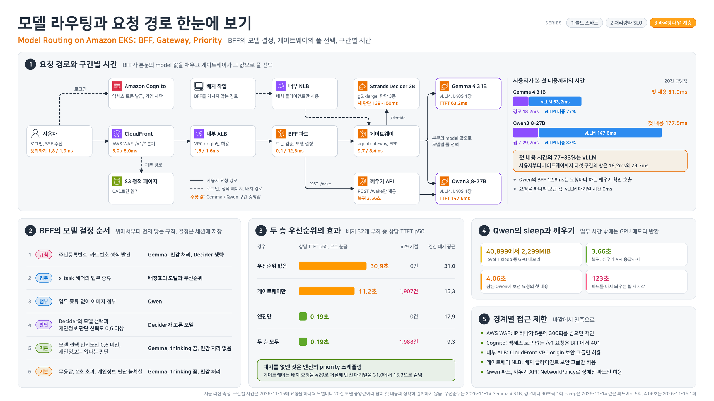
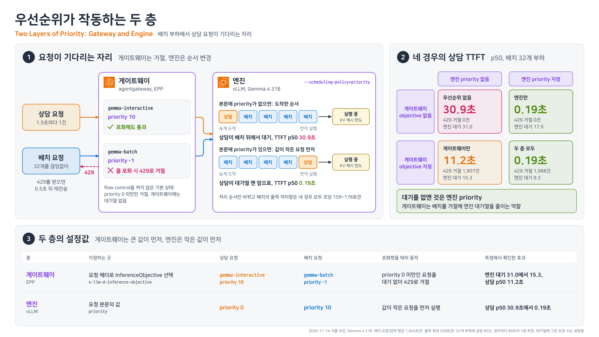
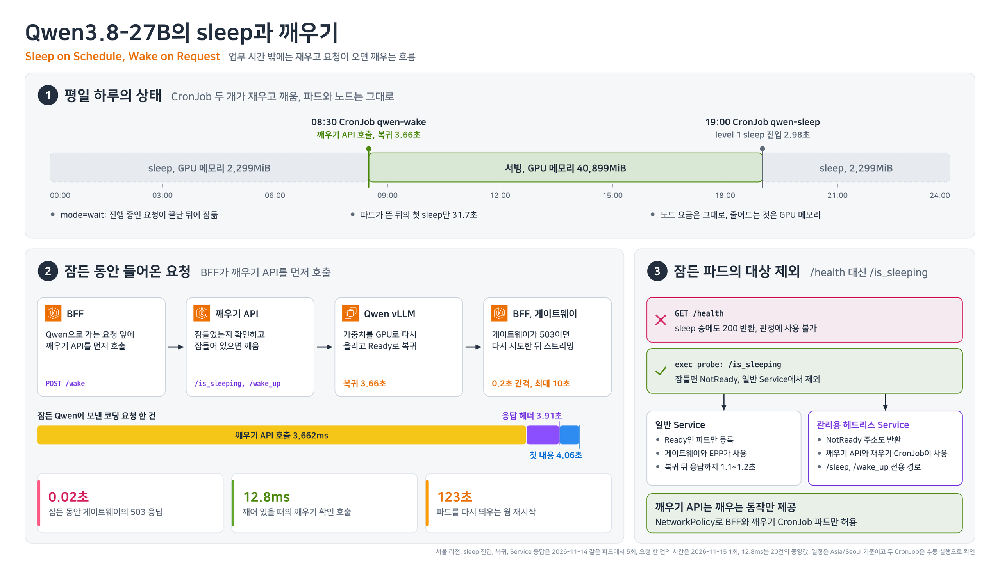
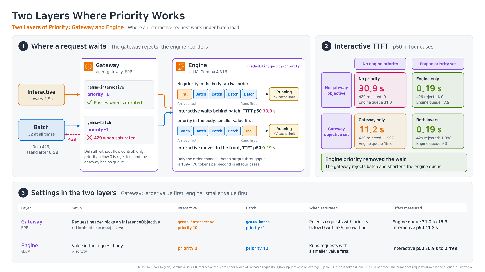
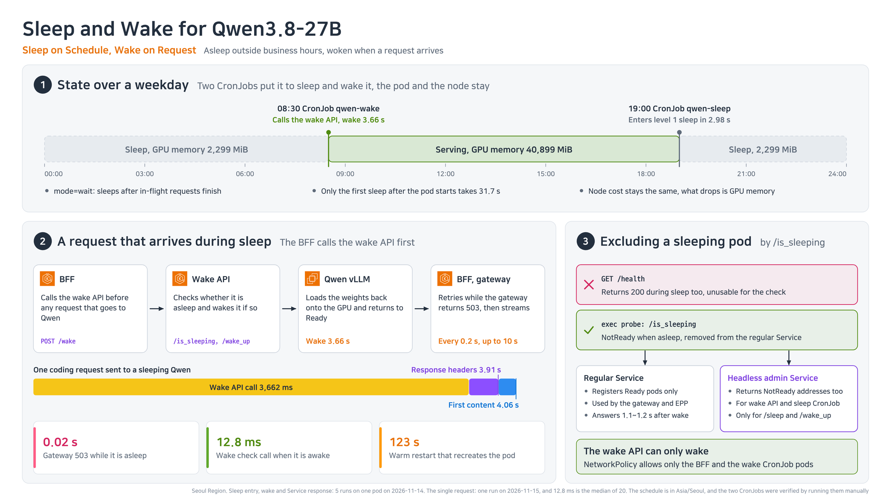

Amazon EKS에서 vLLM으로 두 모델 서빙하기 3부: 게이트웨이와 BFF의 모델 라우팅Serving two models with vLLM on Amazon EKS, Part 3: Model routing with a gateway and a BFF
두 모델을 하나의 엔드포인트로 서빙할 때 모델 선택은 누가 맡고 그 경로는 첫 토큰까지의 시간에 얼마나 더해질까요? 이 환경에서는 BFF가 규칙과 Strands Decider 2B로 모델을 정해 요청 본문의 model 값에 적고 게이트웨이가 그 값으로 풀을 골랐습니다. 사용자에서 게이트웨이까지의 경로가 더한 시간은 중앙값으로 Gemma 4 31B 18.2ms, Qwen3.8-27B 29.7ms였고 나머지 63.2ms와 147.6ms는 vLLM이 사용했습니다.When two models are served behind one endpoint, who chooses the model, and how much does that path add to the time to first token? In this environment the BFF chooses the model with rules and Strands Decider 2B and writes it into the model value of the request body, and the gateway picks the pool by that value. The path from the user to the gateway added a median of 18.2 ms for Gemma 4 31B and 29.7 ms for Qwen3.8-27B, and vLLM used the other 63.2 ms and 147.6 ms.
- 역할 분담: BFF가 규칙, 업무 종류, 이미지 첨부, Strands Decider 2B의 순서로 모델을 정하고 게이트웨이는 본문의
model값만 보고 풀을 고릅니다. 배치 작업은 BFF를 거치지 않고 게이트웨이의 내부 NLB로 들어옵니다.Division of roles: the BFF chooses the model in the order of rules, task type, image attachment and Strands Decider 2B, and the gateway picks the pool by themodelvalue in the body alone. Batch jobs skip the BFF and enter through the internal NLB of the gateway. - 구간별 시간: 사용자가 본 첫 내용까지의 중앙값은 Gemma 4 31B 81.9ms, Qwen3.8-27B 177.5ms였고 그 가운데 vLLM이 63.2ms(77%)와 147.6ms(83%)를 사용했습니다. 모델마다 20건을 하나씩 보낸 값입니다.Time per segment: the median time to the first content the user saw was 81.9 ms for Gemma 4 31B and 177.5 ms for Qwen3.8-27B, of which vLLM used 63.2 ms (77%) and 147.6 ms (83%). These come from 20 requests per model sent one at a time.
- 우선순위: 배치 요청 32개가 KV 캐시를 채운 상태에서 상담 요청의 TTFT 중앙값은 30.9초였고 엔진의 priority 스케줄링을 켜면 0.19초였습니다. 게이트웨이 우선순위만으로는 11.2초였습니다.Priority: with 32 batch requests filling the KV cache, the median TTFT of interactive requests was 30.9 s, and 0.19 s with priority scheduling in the engine. Gateway priority alone gave 11.2 s.
- Decider: Strands Decider 2B의 판단은 질문 하나에 약 70ms이고 세션의 첫 요청에서 한 번만 묻습니다. 응답이 없거나 2초를 넘기면 Gemma 4 31B, thinking 끔, 민감으로 처리합니다.Decider: one judgment by Strands Decider 2B takes about 70 ms and is asked only once, on the first request of a session. With no answer or after 2 s, the request is handled as Gemma 4 31B, thinking off, sensitive.
- sleep: Qwen3.8-27B는 업무 시간 밖에 level 1 sleep으로 GPU 메모리 사용량을 40,899MiB에서 2,299MiB로 줄이고 복귀는 3.66초였습니다. 잠든 Qwen에 보낸 요청은 첫 내용까지 4.06초가 걸렸습니다.Sleep: outside business hours a level 1 sleep cuts the GPU memory use of Qwen3.8-27B from 40,899 MiB to 2,299 MiB, and waking took 3.66 s. A request sent to a sleeping Qwen took 4.06 s to its first content.
하나의 엔드포인트 뒤에서 요청이 지나는 길
클라이언트에게 보이는 것은 OpenAI 호환 엔드포인트 하나입니다. 같은 POST /v1/chat/completions 요청이 내용에 따라 Gemma 4 31B나 Qwen3.8-27B에 도착합니다. 그림 1의 위쪽은 사용자의 요청이 지나는 경로와 구간별 시간입니다. 아래쪽은 뒤에서 차례로 설명할 모델 결정 순서, 우선순위, sleep, 접근 제한입니다.

두 모델이 각자의 GPU 노드에서 응답하게 된 뒤에도 정할 것이 남습니다. 클라이언트의 요청을 어느 모델로 보낼지 누가 정하는지, 그 판단과 경로가 첫 토큰까지의 시간(TTFT)에 얼마나 더해지는지입니다. 이 환경에서는 모델 선택을 BFF(Backend for Frontend)와 게이트웨이가 나눠 맡습니다. BFF는 정책과 판단으로 모델을 정해 요청 본문의 model 값에 적고 게이트웨이는 그 값으로 모델별 풀을 고릅니다. 이 앞단을 모두 더해도 사용자가 본 첫 내용까지의 시간은 대부분 vLLM이 사용했습니다(Gemma 4 31B는 중앙값 81.9ms 중 63.2ms).
이 글은 시리즈 "Amazon EKS에서 vLLM으로 두 모델 서빙하기"의 3부입니다. 이 시리즈는 Amazon Elastic Kubernetes Service(Amazon EKS)에서 vLLM으로 Gemma 4 31B와 Qwen3.8-27B를 함께 서빙한 기록입니다. 1부는 콜드 스타트를 노드 프로비저닝, 이미지 pull, 가중치 로드, 엔진 초기화의 네 구간으로 나눴습니다. 그 결과 Gemma 4 31B의 파드 생성부터 Ready까지가 394초에서 260초로 줄었습니다. 2부는 SLO 하 처리량을 쟀습니다. SLO는 TTFT p99 500ms와 스트리밍 Chunk(한 번에 전송되는 응답 단위) 사이의 간격(ITL) p99 50ms입니다. NVIDIA L40S(g6e.4xlarge)에서는 ITL p99가 동시성 1에서도 Gemma 4 31B 57.7ms, Qwen3.8-27B 74.3ms로 기준을 넘었습니다. Qwen3.8-27B는 MTP(Multi-Token Prediction) 설정 때문에 동시에 3건만 실행했고 MTP를 끄면 20건까지 실행했습니다.
본문의 값은 2026년 11월 14일과 15일에 서울 리전(ap-northeast-2)에서 측정했고 반복 횟수는 측정마다 함께 적었습니다. BFF는 처음에 Amazon Elastic Container Service(Amazon ECS)의 AWS Fargate 태스크로 실행했고 11월 15일에 Amazon EKS의 파드로 옮겼습니다. 본문은 옮긴 뒤의 구성을 기준으로 설명하고 옮기기 전에 확인한 값에는 그 조건을 적었습니다. 11월 17일에 바꾼 모델 결정의 기본 처리는 해당 문단에 날짜와 함께 적었습니다. 이 글은 Amazon EKS에서 GPU 워크로드를 운영하는 플랫폼 엔지니어를 대상으로 하며 Kubernetes Gateway API와 LLM 서빙의 기본 개념을 알고 있다면 무리 없이 읽을 수 있습니다.
01
다섯 계층이 나눠 맡는 일
측정 환경은 서울 리전의 EKS 1.37, Karpenter 1.15, vLLM v0.33.0입니다. GPU 노드는 g6e.4xlarge 2대(모델마다 1대)와 Strands Decider 2B용 g6.xlarge 1대입니다.
사용자의 요청은 Amazon CloudFront, 내부 Application Load Balancer(ALB), BFF, 게이트웨이를 차례로 지나 vLLM에 도착합니다. 이 경로는 그림 1의 1번 칸에 그렸습니다. 인터넷에 열린 곳은 CloudFront 하나이고 그 뒤의 구성 요소는 모두 VPC 안에 있습니다. BFF부터는 EKS 클러스터 안의 파드이고 BFF는 게이트웨이를 클러스터 안의 Service로 호출합니다. 계층별 역할은 표 1과 같이 나눴습니다.
| 계층 | 구성 요소 | 맡은 일 |
|---|---|---|
| 엣지 | CloudFront, AWS WAF | 정적 페이지와 /v1/* 분기, IP별 속도 제한 |
| 앱 | 내부 ALB, BFF(EKS 파드) | 로그인 토큰 검증, 모델과 우선순위 결정, Qwen 깨우기, 도구 실행 |
| 게이트웨이 | agentgateway, EPP, 배치 작업용 내부 NLB | 본문의 model 값으로 풀 선택, 노출 경로 제한, 포화 시 배치 요청 거절 |
| 엔진 | vLLM(Gemma 4 31B, Qwen3.8-27B) | 추론, priority 스케줄링 |
| 판단 | Strands Decider 2B | 규칙으로 정해지지 않는 요청의 모델 판단 |
표 1. 계층별 구성 요소와 역할
모델 선택에 관여하는 계층은 BFF와 게이트웨이입니다. BFF는 요청의 내용과 정책을 보고 모델을 정해 본문의 model 값을 채우고 게이트웨이는 그 값만 보고 풀을 고릅니다. 풀 선택을 게이트웨이에 둔 이유는 배치 작업에 있습니다. 배치 작업은 BFF를 거치지 않고 게이트웨이 앞의 내부 Network Load Balancer(NLB)를 직접 호출하므로, 게이트웨이가 model 값으로 라우팅해야 두 경로에 같은 규칙이 적용됩니다. 업무는 모델별로 나눴습니다. 상담, 번역, 요약은 Gemma 4 31B가, 이미지 이해, OCR, 코딩은 Qwen3.8-27B가 맡습니다.
큰 병원에 비유하면 이해하기 쉽습니다. 엣지는 정문에서 출입을 살피는 경비이고 BFF는 접수 창구입니다. 접수 창구는 본인을 확인하고 어느 진료과로 갈지를 정해 접수증에 적습니다. 판단이 어려운 경우에만 분류 담당자인 Strands Decider 2B에게 묻습니다. 게이트웨이는 층 안내 데스크여서 접수증에 적힌 진료과만 보고 그 과의 대기실로 보냅니다. 엔진은 진료실이고 대기실에서 누구를 먼저 부를지를 정합니다. 배치 작업은 접수 창구를 거치지 않고 직원 통로로 들어오는 의뢰여서 진료과를 가르는 일을 접수 창구가 아닌 안내 데스크에 두었습니다. 실제와 다른 점도 있습니다. 병원의 접수 창구는 환자가 올 때마다 판단하지만 BFF는 세션의 첫 요청에서 한 번 판단하고 그 결과를 다시 사용합니다.
02
CloudFront에서 BFF 파드까지의 앱 계층
CloudFront VPC origins와 Ingress로 만드는 내부 ALB
CloudFront 배포의 기본 경로는 Amazon Simple Storage Service(Amazon S3)의 정적 페이지를 오리진 액세스 제어(OAC)로 읽고 /v1/*만 내부 ALB로 보냅니다. 내부 ALB는 CloudFront VPC origins로 연결했습니다. 프라이빗 서브넷의 ALB, NLB, EC2 인스턴스를 오리진으로 사용하는 기능이고 Terraform에서는 aws_cloudfront_vpc_origin 리소스로 만듭니다. VPC origin을 만들면 CloudFront가 CloudFront-VPCOrigins-Service-SG라는 보안 그룹을 VPC에 만듭니다. 내부 ALB의 보안 그룹은 이 보안 그룹에서 오는 80 포트만 허용합니다.
내부 ALB는 AWS Load Balancer Controller가 BFF의 Ingress에서 만듭니다. ALB의 설정은 Ingress의 어노테이션으로 지정합니다.
# k8s/bff/bff.yaml의 Ingress에서 발췌(주석 생략). ${ALB_LOG_BUCKET}은 설치 스크립트가 채우는 자리입니다.
apiVersion: networking.k8s.io/v1
kind: Ingress
metadata:
name: bff
namespace: app
annotations:
alb.ingress.kubernetes.io/load-balancer-name: ow-on-gpu-bff-pods
alb.ingress.kubernetes.io/scheme: internal
alb.ingress.kubernetes.io/target-type: ip
alb.ingress.kubernetes.io/listen-ports: '[{"HTTP": 80}]'
alb.ingress.kubernetes.io/security-groups: ow-on-gpu-bff-alb
alb.ingress.kubernetes.io/manage-backend-security-group-rules: "true"
alb.ingress.kubernetes.io/healthcheck-path: /healthz
alb.ingress.kubernetes.io/load-balancer-attributes: idle_timeout.timeout_seconds=120,access_logs.s3.enabled=true,access_logs.s3.bucket=${ALB_LOG_BUCKET},access_logs.s3.prefix=bff
alb.ingress.kubernetes.io/target-group-attributes: deregistration_delay.timeout_seconds=30,stickiness.enabled=true,stickiness.type=lb_cookie,stickiness.lb_cookie.duration_seconds=1800
spec:
ingressClassName: alb
rules:
- http:
paths:
- path: /
pathType: Prefix
backend:
service:
name: bff
port:
number: 8080| 어노테이션 | 이 환경의 값 | 동작 |
|---|---|---|
scheme | internal | 인터넷에 노출하지 않는 내부 ALB로 생성 |
target-type | ip | 파드의 IP를 대상으로 등록. ALB의 고정 세션을 사용하려면 이 유형이 필요 |
security-groups | ow-on-gpu-bff-alb | ALB에 연결할 보안 그룹을 직접 지정. 이름은 보안 그룹의 Name 태그와 대조 |
manage-backend-security-group-rules | "true" | 컨트롤러가 공용 백엔드 보안 그룹을 ALB에 추가로 연결하고 노드와 파드 쪽 보안 그룹 규칙에 사용 |
load-balancer-attributes | 유휴 제한 시간 120초, Amazon S3 접근 로그 | ALB 속성을 지정. 어노테이션에 적은 속성만 갱신 |
target-group-attributes | 등록 해제 지연 30초, ALB 쿠키 고정 1,800초 | 대상 그룹 속성을 지정 |
표 2. 내부 ALB를 만드는 Ingress의 어노테이션. 이름 앞의 alb.ingress.kubernetes.io/는 생략했고 동작은 AWS Load Balancer Controller 문서의 설명입니다
AWS Load Balancer Controller의 Ingress 어노테이션 문서에 따르면 security-groups를 지정하지 않으면 컨트롤러가 보안 그룹을 하나 만들어 ALB에 연결합니다. 노드와 파드의 보안 그룹도 그 그룹에서 오는 트래픽을 받도록 함께 고칩니다. 직접 지정한 경우에는 노드와 파드가 ALB의 트래픽을 받도록 사용자가 보안 그룹 규칙을 구성해야 합니다. manage-backend-security-group-rules를 true로 두면 이 규칙도 컨트롤러가 관리합니다. 이 환경에서는 ALB로 들어오는 쪽을 Terraform으로 만든 보안 그룹이 CloudFront VPC origin으로 제한합니다. ALB에서 BFF 파드로 가는 쪽은 컨트롤러가 관리합니다. 컨트롤러는 ALB에 백엔드 보안 그룹을 추가로 연결했고 파드가 사용하는 클러스터 보안 그룹의 인바운드 규칙에 그 그룹을 넣었습니다.
서브넷은 어노테이션에 적지 않았습니다. 서브넷 자동 탐색 문서에 따르면 컨트롤러는 내부 로드 밸런서의 후보로 kubernetes.io/role/internal-elb 태그가 있는 프라이빗 서브넷을 찾고 AZ마다 하나를 고릅니다. 컨트롤러는 이 환경의 ALB를 AZ 네 곳의 프라이빗 서브넷에 만들었습니다.
유휴 제한 시간, 접근 로그, 쿠키 고정에는 BFF가 ECS Fargate였을 때 Terraform으로 만든 ALB와 같은 값을 넣었습니다. ALB 가운데 Terraform에 남긴 것은 보안 그룹과 CloudFront 쪽 연결입니다. Terraform은 컨트롤러가 만든 ALB를 태그(ingress.k8s.aws/stack)로 조회해 VPC origin의 대상으로 지정합니다.
Graviton 노드에서 실행하는 BFF 파드
BFF 파드 2개는 네임스페이스 app에서 실행되고 Karpenter가 관리하는 전용 NodePool app의 노드에 배치됩니다. 이 NodePool은 arm64 아키텍처(AWS Graviton)의 c와 m 계열 7세대 이상 가운데 vCPU가 2개인 On-Demand 인스턴스만 고릅니다. taint(ow-on-gpu/app)로 다른 파드를 막고 limits에 CPU 8개를 두어 노드가 의도와 다르게 늘지 않게 했습니다. 2026년 11월 15일에 Karpenter는 이 NodePool에서 c7g.large 2대를 서로 다른 AZ에 만들었습니다.
BFF 파드는 nodeSelector(karpenter.sh/nodepool: app)와 toleration으로 이 노드만 고르고 topologySpreadConstraints로 AZ 두 곳에 나뉩니다. 뒤에서 설명할 게이트웨이 파드와 같이 minDomains: 2와 matchLabelKeys를 함께 두었습니다. 자원은 CPU 500m과 메모리 512Mi를 요청하고 메모리 한도는 1Gi입니다. 종료할 때는 preStop에서 15초를 기다려 ALB가 파드를 대상에서 뺄 시간을 두었습니다. 파드 하나가 내려갈 때 진행 중인 스트림이 어떻게 되는지는 확인하지 않았습니다.
BFF는 게이트웨이와 깨우기 API를 클러스터 안의 Service 주소로 호출합니다. 게이트웨이는 네임스페이스 inference의 Service inference-gateway이고 깨우기 API는 같은 네임스페이스의 Service qwen-wake-api(8080 포트)입니다. 두 호출 모두 로드 밸런서를 거치지 않습니다.
BFF가 AWS 자격 증명으로 호출하는 API는 뒤에서 설명할 웹 검색 하나입니다. EKS Pod Identity는 IAM 역할을 Kubernetes ServiceAccount에 연결해 파드에 자격 증명을 주는 기능입니다. 웹 검색 권한(bedrock-agentcore:InvokeWebSearch)만 가진 역할을 네임스페이스 app의 ServiceAccount bff에 연결했습니다. 로그인 토큰 검증은 공개 키만 읽으므로 AWS 권한이 필요하지 않습니다.
로그인과 속도 제한
CloudFront 주소는 누구나 열 수 있으므로 /v1/* 요청에는 Amazon Cognito 로그인을 요구합니다. 정적 페이지가 브라우저에서 Cognito의 InitiateAuth(USER_PASSWORD_AUTH 흐름)를 직접 호출하므로 비밀번호는 BFF를 거치지 않습니다. BFF는 사용자 풀의 공개 키(JWKS)로 액세스 토큰의 서명을 확인하고 발급자, 만료 시각, token_use, 앱 클라이언트 ID를 확인합니다. 앱 클라이언트 ID가 정적 페이지에 드러나므로 사용자 풀의 가입은 막았습니다.
인증은 BFF에서 합니다. 로그인하지 않은 요청도 CloudFront와 ALB를 지나 BFF까지는 도달하고 거기서 401을 받습니다. BFF를 파드로 옮긴 뒤에도 토큰 없는 요청과 틀린 토큰을 넣은 요청은 401이었습니다. 토큰 없는 요청 6건은 두 파드의 로그에 3건씩 기록됐습니다. BFF 앞에서 막는 장치는 AWS WAF의 속도 기반 규칙(rate-based rule) 하나이고 IP 하나가 5분에 300회를 넘으면 차단하도록 설정했습니다.
이 규칙이 언제 작동하는지는 BFF가 ECS Fargate였던 2026년 11월 14일에 한 번 쟀고 파드로 옮긴 뒤에는 다시 재지 않았습니다. 정적 페이지에 0.5초 동안 400번을 연달아 요청하자 400번이 모두 200이었고 첫 403은 요청을 시작하고 25.6초 뒤에 나왔습니다. 차단은 첫 403에서 300.4초 뒤에 풀렸습니다. AWS WAF 문서에 따르면 속도 기반 규칙은 정밀한 요청 수 제한용이 아니며 감지까지의 지연은 보통 30초 미만입니다. 짧은 시간에 몰아서 보내는 요청은 한도보다 많이 통과한다는 점을 전제로 사용해야 합니다.
03
BFF가 모델을 정하는 순서
규칙을 먼저 적용하는 결정 순서
BFF는 OpenAI 호환 POST /v1/chat/completions를 받는 Python 서비스이고 EKS 클러스터의 파드 2개로 실행합니다. 요청마다 판단 모델을 부르면 그 시간이 TTFT에 더해집니다. 그래서 비용이 거의 없는 규칙을 먼저 적용하고 규칙으로 정해지지 않는 요청만 Strands Decider 2B에 묻고 한 번 정한 결과는 세션에 저장해 다시 사용합니다. 같은 순서를 그림 1의 2번 칸에 요약했습니다.
- 로그인 토큰을 검증합니다. 통과하지 못하면 401로 끝냅니다.
- 세션(
x-session-id)에 저장된 결정이 있으면 그 결정을 사용합니다. 주민등록번호와 카드번호 형식은 세션에 결정이 있어도 메시지마다 다시 확인합니다. - 주민등록번호나 카드번호(Luhn 검사 통과) 형식이 있으면 Gemma 4 31B로 보내고 민감으로 표시합니다. Decider를 부르지 않습니다.
- 업무 종류(
x-task)가 있으면 배정표를 따릅니다. - 업무 종류가 없고 이미지가 첨부되어 있으면 Qwen3.8-27B로 보냅니다.
- 그 밖에는 게이트웨이의
/decide경로로 Strands Decider 2B에 묻습니다. 모델 선택과 개인정보 판단의 신뢰도가 모두 0.6 이상이면 Decider의 판단을 따릅니다. 모델 선택의 신뢰도만 0.6에 못 미치고 개인정보가 없다는 판단이 0.6 이상이면 Gemma 4 31B, thinking 끔으로 보내고 민감으로 표시하지 않습니다. 응답 실패와 2초 초과를 포함한 나머지 경우는 Gemma 4 31B, thinking 끔, 민감으로 처리합니다.
Decider가 정하지 못한 요청의 기본 처리가 둘로 나뉜 것은 2026년 11월 17일부터입니다. 그 전에는 신뢰도가 하나라도 0.6에 못 미치면 민감으로 표시했습니다. 일반 질문은 Decider에 준 두 선택지 어디에도 뚜렷이 들지 않아 모델 선택의 신뢰도가 낮게 나옵니다. 그 이유만으로 민감 요청이 되면 뒤에서 설명할 웹 검색 도구가 빠지므로, 개인정보가 없다는 판단을 얻은 요청은 민감으로 다루지 않게 했습니다.
결정이 나면 BFF는 본문의 model, priority, chat_template_kwargs.enable_thinking과 헤더 x-llm-d-inference-objective를 채워 게이트웨이로 보냅니다. 이 환경의 데이터 정책은 민감 정보가 든 요청을 Gemma 4 31B로만 보내도록 정했습니다. Gemma 4 31B는 이 구성에서 이미지를 받지 않으므로, 민감 정보와 이미지가 함께 온 요청은 422로 거절합니다. 어떤 결정이 났는지는 응답 헤더 x-bff-model, x-bff-decision, x-bff-sensitive에 담깁니다.
Strands Decider 2B의 판단 지연
Strands Decider는 선택지 가운데 하나를 고르거나 예와 아니오의 확률을 돌려주는 판단 모델입니다. g6.xlarge(NVIDIA L4) 노드 한 대에 배포했고 GPU 메모리는 23,034MiB 중 5,150MiB를 사용합니다. BFF는 요청 하나에 질문 세 개를 담아 보냅니다. 모델 선택(route), 개인정보 포함 여부(policy), 여러 단계의 추론이 필요한지(thinking)입니다. 게이트웨이에서는 HTTPRoute가 POST /decide의 경로를 서버의 /v1/systemone으로 바꿔 Service로 직접 보냅니다.
| 경로 | 판단 | 중앙값 | p95 |
|---|---|---|---|
| Service 직접 | route | 70.1ms | 80.3ms |
| Service 직접 | policy | 70.1ms | 72.2ms |
| Service 직접 | thinking | 70.0ms | 75.7ms |
게이트웨이 /decide | route | 72.6ms | 78.1ms |
게이트웨이 /decide | policy | 72.8ms | 75.9ms |
게이트웨이 /decide | thinking | 73.0ms | 77.3ms |
표 3. Strands Decider 2B의 판단 지연(2026년 11월 14일, 예열을 켠 구성, 질문 하나를 담은 요청을 판단마다 50회씩 차례로 보낸 값)
질문 하나의 판단은 약 70ms이고 게이트웨이를 거치면 중앙값이 2.5ms에서 3ms 늘어납니다. BFF가 세 질문을 한 요청에 담아 게이트웨이로 보낸 왕복은 BFF 로그에서 139.4ms에서 150.0ms였습니다(2026년 11월 15일, 4건). 세션의 첫 요청에서 한 번만 묻고 결과를 다시 사용하므로 이 시간은 메시지마다 더해지지 않습니다. 동시 요청을 보냈을 때의 지연은 재지 않았고 서버는 DECIDER_MAX_CONCURRENCY=1로 동시 요청을 하나씩 처리합니다.
경로별 결정 확인
CloudFront 주소로 요청을 보내 결정과 첫 내용까지의 시간을 확인했습니다. 표 4와 그 아래의 세션 고정 확인은 BFF가 ECS Fargate였던 2026년 11월 14일에 확인한 결과이고 EKS 파드로 옮긴 뒤에는 다시 확인하지 않았습니다.
| 요청 | 모델 | 결정 근거 | 민감 | 사용자가 본 첫 내용 |
|---|---|---|---|---|
상담 (x-task: support) | gemma-4-31b | task | false | 1,611ms |
번역 (x-task: translate) | gemma-4-31b, batch | task | false | 103ms |
코딩 (x-task: coding), Qwen이 깨어 있음 | qwen38-27b | task | false | 198ms |
| 업무 종류 없음, 코드 수정 요청 | qwen38-27b | decider | false | 355ms |
| 업무 종류 없음, 요약 요청 | gemma-4-31b | decider | false | 241ms |
| 코딩인데 주민등록번호 형식 포함 | gemma-4-31b | rule | true | 92ms |
| 코딩, Qwen이 잠들어 있음 | qwen38-27b | task | false | 4,050ms |
표 4. 경로별 결정과 사용자가 본 첫 내용까지의 시간(2026년 11월 14일, BFF가 ECS Fargate였던 구성, 요청마다 한 번)
상담 요청의 첫 내용이 1.6초인 것은 주문 조회 도구 때문입니다. 모델이 먼저 get_order를 부르고 BFF가 고정 데이터로 답한 뒤 두 번째 응답에서 내용이 나옵니다. 규칙이나 업무 종류로 결정하는 데는 0.1ms에서 0.5ms가 걸렸습니다. 잠든 Qwen에 보낸 요청은 뒤에서 설명할 깨우기 시간이 더해져 4.05초였습니다.
BFF의 세션 캐시는 파드마다 메모리에 있습니다. 파드가 2개라서 같은 세션의 요청이 다른 파드로 가면 Decider에 다시 묻습니다. 이 문제는 ALB 대상 그룹의 고정 세션(sticky sessions)으로 줄였습니다. 같은 브라우저의 요청은 ALB가 만든 쿠키를 따라 같은 대상으로 갑니다. 11월 14일의 확인에서는 같은 세션 ID로 여섯 번 보냈을 때 쿠키를 함께 보내면 두 번째 요청부터 세션의 결정을 다시 사용했습니다. 쿠키 없이 보내면 두 번째 요청이 다른 태스크로 가서 Decider에 다시 물었습니다. 파드로 옮긴 뒤의 대상 그룹에도 같은 설정(쿠키 고정 1,800초)을 넣었습니다.
BFF의 도구로 추가한 웹 검색
2026년 11월 15일에 BFF에 웹 검색 도구를 더했습니다. 추론은 그대로 Gemma 4 31B와 Qwen3.8-27B가 하고 검색만 Amazon Bedrock AgentCore Web Search가 합니다. API 이름은 InvokeWebSearch입니다. 요청이 x-web-search: on 헤더를 보내면 BFF가 모델 요청에 web_search 도구와 지시문을 넣습니다. 모델이 도구를 부르면 BFF가 InvokeWebSearch를 호출하고 결과에 번호를 매겨 모델에 돌려줍니다. 검색할지와 무엇을 검색할지는 모델이 정하고 한 요청에서 도구를 부를 수 있는 차례는 3번입니다.
BFF에는 주문 조회 도구를 실행하는 흐름이 이미 있어서 게이트웨이와 vLLM의 구성은 바꾸지 않았습니다. 이 API는 서울 리전에서 제공되지 않아 이 환경은 us-east-1의 API를 호출하도록 구성했습니다. 검색어가 서울 리전 밖으로 나가므로 민감 정보가 있는 요청에는 도구를 넣지 않고 모델이 만든 검색어에 주민등록번호나 카드번호 형식이 있으면 그 검색도 보내지 않습니다. 검색은 쿼리 1,000건당 7.00 USD의 요금이 있고 도구 정의만큼 프롬프트가 길어지므로, 요청이 켰을 때만 도구를 넣습니다. 이용 조건이 검색 결과를 사용한 출력에 출처와 링크를 표시하도록 요구하므로 답변 아래의 출처 목록은 화면이 직접 표시합니다.
Decider가 정하지 못해 기본 처리로 보낸 요청은 민감으로 표시됐는지에 따라 갈립니다. Decider가 응답하지 않았거나 개인정보 판단의 신뢰도가 0.6에 못 미친 요청에는 민감 정보가 있는 요청과 같이 도구를 넣지 않습니다. 모델 선택의 신뢰도만 낮은 요청에는 도구를 넣습니다. 2026년 11월 17일에 기본 처리를 이렇게 나누기 전에는 업무 종류 없이 보낸 일반 질문에 검색이 실행되지 않았습니다. 나눈 뒤 BFF 파드 안에서 업무 종류 없는 요청을 한국어와 영어로 한 건씩 보냈을 때는 검색이 한 번씩 실행되고 출처가 5개씩 돌아왔습니다.
서울의 BFF가 us-east-1의 API를 호출한 시간은 요청 8건에서 485ms에서 662ms(중앙값 568ms)였습니다. 이 값은 BFF를 파드로 옮기기 전에 잰 것이고 옮긴 뒤에는 두 파드에서 검색을 한 번씩 호출해 결과가 돌아오는 것만 확인했습니다. 검색을 사용한 요청은 도구 호출, 검색, 결과를 넣은 두 번째 추론이 첫 내용 앞에 놓이므로 첫 내용이 그만큼 늦어집니다.
04
본문의 model 값으로 풀을 고르는 게이트웨이
InferencePool, EPP, agentgateway
Gateway API Inference Extension(GAIE)은 Kubernetes Gateway API에 추론 워크로드용 리소스를 더하는 프로젝트입니다. InferencePool은 모델 서버 파드의 묶음으로 HTTPRoute의 백엔드가 되고 EPP는 풀 안에서 요청을 받을 파드를 고릅니다. GAIE v1.6.0 릴리스 노트에 따르면 이 버전부터 EPP와 본문 기반 라우팅(BBR), InferenceObjective가 llm-d 프로젝트로 옮겨졌습니다. 그래서 이 환경은 InferencePool CRD만 GAIE에서 설치하고 EPP와 InferenceObjective는 llm-d-router에서 설치했습니다.
| 구성 요소 | 버전 | 이 환경에서 하는 일 |
|---|---|---|
| Gateway API CRD | v1.6.3 | Gateway, HTTPRoute |
| GAIE CRD | v1.6.2 | InferencePool |
| llm-d-router | v1.0.0 | 풀마다 EPP 2개, InferenceObjective |
| agentgateway | v1.7.0 | 게이트웨이 구현체(파드 2개), 본문 기반 라우팅 |
| AWS Load Balancer Controller | v3.6.3 | 게이트웨이 Service 앞의 내부 NLB, BFF 앞의 내부 ALB |
표 5. 게이트웨이 계층의 구성 요소와 버전(2026년 11월 14일 기준)
agentgateway v1.7.0과 llm-d-router v1.0.0을 함께 시험했다는 문서는 찾지 못했고 이 환경에서는 이 조합으로 동작했습니다. CRD부터 Gateway까지 전체 설치는 72초가 걸렸습니다.
이 환경은 풀마다 vLLM 파드가 하나라서 EPP가 고를 대상이 하나뿐입니다. EPP의 스케줄링 시간은 요청당 0.03ms였습니다. 여기서 EPP가 실제로 하는 일은 풀이 포화됐는지 판단해 우선순위가 낮은 요청을 거절하는 것이고 그 효과는 뒤에서 설명할 우선순위 측정에서 확인합니다. EPP는 풀마다 2개를 두었지만 리더 하나만 요청을 처리하고 나머지는 대기합니다. 리더가 응답하지 않으면 게이트웨이가 EPP 없이 풀의 파드로 보내도록 failureMode: FailOpen으로 설정했는데 이 장애 동작은 시험하지 않았습니다.
본문 기반 라우팅과 노출 경로 제한
OpenAI 호환 API에서 모델 이름은 URL이 아닌 요청 본문에 있습니다. 경로와 헤더로 백엔드를 고르는 HTTPRoute만으로는 두 모델을 가를 수 없으므로, 라우팅 전에 본문의 model 값을 헤더로 옮겨야 합니다. agentgateway 문서에 따르면 이 패턴에는 별도의 외부 처리(ext-proc) 서비스가 필요 없고 Gateway를 대상으로 하는 AgentgatewayPolicy 하나로 처리합니다.
# k8s/gateway/gateway.yaml에서 발췌(주석 생략)
apiVersion: agentgateway.dev/v1alpha1
kind: AgentgatewayPolicy
metadata:
name: model-routing
spec:
targetRefs:
- group: gateway.networking.k8s.io
kind: Gateway
name: inference-gateway
traffic:
phase: PreRouting
transformation:
request:
set:
- name: X-Gateway-Base-Model-Name
value: 'request.method == "GET" ? default(request.headers["x-model"], "") : string(json(request.body).model)'HTTPRoute는 이 헤더와 경로가 모두 정확히 맞는 요청만 풀로 보냅니다.
# k8s/gemma/routes.yaml에서 발췌. Qwen의 HTTPRoute는 헤더 값과 풀 이름만 다릅니다.
rules:
- matches:
- path:
type: Exact
value: /v1/chat/completions
headers:
- type: Exact
name: X-Gateway-Base-Model-Name
value: gemma-4-31b
backendRefs:
- group: inference.networking.k8s.io
kind: InferencePool
name: gemma
timeouts:
request: 300s경로를 PathPrefix가 아닌 Exact로 둔 데에는 이유가 있습니다. Qwen 파드의 8000 포트에는 추론 API와 함께 /sleep, /wake_up 같은 관리 엔드포인트가 열려 있습니다. 등록한 경로만 통과시키면 이 엔드포인트는 맞는 rule이 없어 게이트웨이에서 404로 끝납니다. 표 6은 클러스터 안의 임시 파드에서 게이트웨이 Service로 요청을 보내 확인한 결과입니다.
| 요청 | 결과 |
|---|---|
/v1/chat/completions, model은 gemma-4-31b | 200, Gemma 4 31B가 응답 |
/v1/chat/completions, model은 qwen38-27b | 200, Qwen3.8-27B가 응답 |
/v1/chat/completions, 등록하지 않은 model | 404 |
| 본문은 gemma, 헤더는 qwen으로 위조 | 200, Gemma 4 31B가 응답 |
POST /sleep?level=1 (모델 헤더나 본문의 model을 넣은 경우 포함) | 404 |
POST /wake_up, GET /is_sleeping, GET /metrics, POST /v1/completions | 404 |
stream: true | 200, 청크 15개에서 16개로 나뉘어 도착 |
표 6. 게이트웨이 Service로 보낸 시험 요청과 결과(2026년 11월 14일, 요청마다 한 번)
클라이언트가 X-Gateway-Base-Model-Name 헤더를 직접 넣어도 본문의 model 값이 덮어쓰므로, 헤더를 위조해 다른 풀을 고르는 길은 막혀 있습니다. 본문이 없는 GET /v1/models만 예외로 x-model 헤더를 보고 이 경로는 EPP를 거치지 않고 각 모델의 Service로 갑니다.
구성하면서 고친 것이 두 가지 있습니다. 처음에는 default()를 겹쳐 본문 파싱 실패를 받아 내는 식을 사용했는데 본문이 없는 GET에서 동작하지 않아, 위 발췌처럼 요청 메서드로 나누는 식으로 바꿨습니다. 게이트웨이 파드 2개의 AZ 분산도 topologySpreadConstraints만으로는 걸리지 않았습니다. minDomains: 2와 matchLabelKeys: [pod-template-hash]를 함께 두자 두 파드가 서로 다른 AZ에 배치됐습니다.
게이트웨이 앞의 내부 NLB는 AWS Load Balancer Controller가 agentgateway가 만든 Service의 어노테이션을 읽어 만듭니다. 리스너는 TCP 80 하나이고 대상은 게이트웨이 파드의 IP입니다. 이 NLB는 배치 작업이 사용하며 보안 그룹은 배치 클라이언트의 보안 그룹만 허용합니다. BFF는 같은 Service를 클러스터 안에서 직접 호출합니다.
05
배치 부하에서 상담 요청을 지키는 두 층의 우선순위
Gemma 4 31B는 사용자가 기다리는 상담 요청과, 배치로 처리해도 되는 번역과 요약 요청을 함께 받습니다. 배치 요청이 KV 캐시를 채우고 있을 때 상담 요청이 얼마나 기다리는지가 문제입니다. 이 구성에서 우선순위를 지정하는 곳은 두 군데입니다.
- 게이트웨이:
InferenceObjective에 priority를 정의하고 요청은x-llm-d-inference-objective헤더로 그 이름을 고릅니다. llm-d의 flow control 문서에 따르면 flow control을 켜지 않은 기본 상태에서는 priority가 0보다 낮은 요청만 다르게 처리합니다. 풀이 포화되면 이런 요청을 대기시키지 않고 HTTP 429로 거절하고 나머지 요청은 그대로 모델 서버로 보냅니다. - 엔진: vLLM을
--scheduling-policy=priority로 실행하고 요청 본문의priority로 지정합니다. vLLM의 스케줄러 설정 문서에 따르면 값이 작을수록 먼저 처리합니다.
두 값은 방향이 반대입니다. 이 환경에서 상담 요청은 게이트웨이에서 priority 10인 objective를, 엔진에서는 priority 0을 받습니다. 배치 요청은 각각 -1과 10입니다. BFF가 결정에 따라 헤더와 본문의 값을 함께 채웁니다.
# k8s/gemma/routes.yaml에서 발췌(주석 생략). Qwen에도 같은 두 개가 있습니다.
apiVersion: llm-d.ai/v1
kind: InferenceObjective
metadata:
name: gemma-interactive
spec:
priority: 10
poolRefs:
- name: gemma
---
apiVersion: llm-d.ai/v1
kind: InferenceObjective
metadata:
name: gemma-batch
spec:
priority: -1
poolRefs:
- name: gemma두 층이 요청을 다루는 방식은 다릅니다. 게이트웨이는 포화한 풀로 가는 배치 요청을 거절하고 엔진은 이미 받은 요청 가운데 무엇을 먼저 실행할지를 정합니다. 그림 2는 이 차이를 뒤에서 설명할 측정의 결과와 함께 나타낸 것입니다.

어느 쪽이 효과가 있는지 네 가지 경우로 나눠 쟀습니다. Gemma 4 31B에 배치 요청(상품 리뷰 요약, 입력 평균 1,845토큰, 출력 최대 256토큰)을 32개씩 끊임없이 보내 KV 캐시를 채웠습니다. 그 상태에서 상담 요청(짧은 질문, 출력 최대 48토큰)을 1.5초마다 하나씩 90초 동안 60건 보내 TTFT를 쟀습니다. 요청은 모두 게이트웨이를 거쳤고 429로 거절된 배치 요청은 0.5초 뒤에 다시 보냈습니다.
| 경우 | 상담 TTFT p50 | p90 | p99 | 배치 429 거절 | 배치 출력 처리량 | 엔진의 대기 요청 수(평균) |
|---|---|---|---|---|---|---|
| 우선순위 없음 | 30,895ms | 39,154ms | 39,839ms | 0건 | 170.1 tok/s | 31.0 |
| 게이트웨이만 | 11,183ms | 23,081ms | 27,563ms | 1,907건 | 175.7 tok/s | 15.3 |
| 엔진만 | 190ms | 1,244ms | 1,409ms | 0건 | 159.2 tok/s | 17.9 |
| 둘 다 | 193ms | 1,030ms | 1,433ms | 1,988건 | 173.0 tok/s | 9.3 |
표 7. 배치 부하 중 상담 요청의 TTFT와 배치 처리 결과(Gemma 4 31B, 2026년 11월 14일, 경우마다 90초씩 한 번). "게이트웨이만"은 objective 헤더만, "엔진만"은 본문의 priority만 지정한 경우입니다
상담 요청의 대기를 없앤 것은 엔진 우선순위입니다. 우선순위가 없으면 상담 요청이 배치 요청 뒤에서 차례를 기다려 TTFT 중앙값이 30.9초였고 엔진 우선순위를 켜면 0.19초였습니다. 게이트웨이 우선순위만으로는 11.2초였습니다. 게이트웨이는 90초 동안 배치 요청을 1,907건 거절해 엔진의 대기 요청 수를 평균 31.0에서 15.3으로 줄였습니다. 그래도 이미 엔진에 들어간 배치 요청과 같은 순서로 기다리는 것은 그대로였습니다. 둘 다 켠 경우의 상담 TTFT는 엔진만 켠 경우와 같은 수준이고 차이는 엔진의 대기 요청 수(17.9에서 9.3)에 있습니다.
배치의 출력 처리량은 네 경우 모두 초당 159토큰에서 176토큰입니다. 엔진이 포화된 상태에서 우선순위는 처리 순서를 바꿨고 전체 처리량은 바꾸지 않았습니다.
운영에 옮기기 전에 볼 점이 세 가지 있습니다. 배치 클라이언트 32개가 0.5초 간격으로 다시 보내면 90초에 약 1,900건이 429로 돌아오므로, 배치 작업에는 재시도 간격을 늘리는 처리를 넣어야 합니다. 엔진 우선순위를 켜도 p90은 1.2초였습니다. 상담 요청이 들어온 순간 엔진이 긴 배치 입력의 prefill을 처리하고 있으면 그 단계가 끝날 때까지 기다리는 것으로 추정하며 확인하지는 않았습니다. 마지막으로 이 측정은 Gemma 4 31B로만 했고 Qwen3.8-27B 쪽은 재지 않았습니다.
06
모델이 잠들었거나 Decider가 답하지 못할 때
일정에 따라 재우고 요청이 오면 깨우는 Qwen3.8-27B
내부 업무용인 Qwen3.8-27B는 업무 시간(평일 09:00에서 19:00으로 가정) 밖에는 vLLM의 sleep mode로 재웁니다. vLLM 문서에 따르면 level 1 sleep은 가중치를 GPU에서 내리고 KV 캐시를 비웁니다. 이 환경에서 GPU 메모리 사용량은 40,899MiB에서 2,299MiB로 줄었습니다. sleep은 파드와 노드를 그대로 두므로 노드 요금은 줄지 않습니다. 복귀는 약 3.7초로, 파드를 다시 띄우는 웜 재시작(최적화 구성에서 123초, 1부에서 다룸)보다 짧습니다.
| 객체 | 내용 |
|---|---|
CronJob qwen-sleep | 평일 19:00(Asia/Seoul)에 /sleep?level=1&mode=wait 호출 |
CronJob qwen-wake | 평일 08:30(Asia/Seoul)에 깨우기 API 호출 |
Deployment qwen-wake-api | POST /wake만 제공. /is_sleeping을 확인하고 잠들어 있으면 /wake_up 호출. 복제본 2개 |
Service vllm-qwen-admin | 관리 요청용 헤드리스 Service. NotReady 파드의 주소도 돌려줌 |
| NetworkPolicy 2개 | Qwen의 8000 포트와 깨우기 API의 8080 포트에 정해진 파드만 허용 |
표 8. Qwen3.8-27B의 sleep 운영 구성
이 객체들이 하루 동안 맡는 일과 잠든 동안 들어온 요청이 지나는 순서는 그림 3과 같습니다. 그림에 적은 시간은 뒤에 나오는 표 9와 잠든 Qwen에 보낸 요청 한 건의 측정에서 옮긴 값입니다.

재우는 쪽에서는 진행 중인 요청을 끊지 않는 것이 먼저입니다. /sleep에 mode=wait를 주면 진행 중인 요청이 끝난 뒤에 잠들고 기본값 abort는 진행 중인 요청을 중단합니다. 이 인자는 sleep mode 문서 페이지에 설명이 없어 vLLM v0.33.0의 소스에서 확인했습니다.
잠든 파드가 요청을 받지 않게 하는 일은 readinessProbe가 맡습니다. vLLM의 /health는 sleep 중에도 200을 반환하므로 /is_sleeping으로 판정하는 exec probe로 바꿨습니다. 잠든 파드는 NotReady가 되어 일반 Service의 엔드포인트에서 빠지고 관리 요청은 publishNotReadyAddresses: true인 헤드리스 Service로 보냅니다.
관리 엔드포인트에 닿는 경로는 좁혔습니다. vLLM 문서는 VLLM_SERVER_DEV_MODE=1로 열리는 이 엔드포인트를 사용자에게 노출하지 말라고 안내합니다. 깨우기 API는 깨우는 동작만 하고 이 API로는 모델을 재울 수 없습니다. 게이트웨이의 HTTPRoute에 등록하지 않는 것에 더해 NetworkPolicy로 Qwen 파드의 8000 포트에 닿는 파드를 제한했습니다.
# k8s/sleep-controller/networkpolicies.yaml에서 발췌(주석과 일부 출발지 생략)
apiVersion: networking.k8s.io/v1
kind: NetworkPolicy
metadata:
name: vllm-qwen-ingress
spec:
podSelector:
matchLabels:
app.kubernetes.io/name: vllm-qwen
policyTypes: ["Ingress"]
ingress:
- ports:
- protocol: TCP
port: 8000
from:
- podSelector:
matchLabels:
gateway.networking.k8s.io/gateway-name: inference-gateway
- podSelector:
matchLabels:
llm-d-router-gateway: qwen-epp
- podSelector:
matchLabels:
app.kubernetes.io/name: qwen-wake-apiNetworkPolicy를 적용하려면 Amazon VPC CNI 애드온의 구성 값에 enableNetworkPolicy: "true"를 넣어야 합니다. 이 값을 넣기 전에는 정책을 만들어도 적용되지 않았습니다. 값을 넣을 때 aws-node 데몬셋이 노드 7대에서 37초에 걸쳐 다시 시작됐고 그동안 두 모델과 Decider는 다시 시작 없이 응답했습니다.
| 항목 | 최소 | 최대 |
|---|---|---|
sleep 진입 (/sleep 응답까지) | 2.977초 | 2.981초 |
| 복귀 (깨우기 API 응답까지) | 3.655초 | 3.662초 |
| 깨우기 응답 뒤 일반 Service가 다시 응답 | 1.115초 | 1.169초 |
| 깨우기 응답 뒤 게이트웨이의 대화 요청이 성공 | 1.344초 | 1.400초 |
표 9. sleep 진입과 복귀 시간(2026년 11월 14일, 같은 파드에서 5회 반복)
다섯 번의 값이 거의 같습니다. 복귀 자체는 3.66초이고 그 뒤 Service와 게이트웨이가 엔드포인트를 다시 잡는 데 1초 남짓 더 걸립니다. 파드가 뜬 뒤 첫 sleep만은 31.71초가 걸렸고 새 파드에서 다시 재도 같았습니다. 2026년 11월 15일에 다시 쟀을 때는 31.77초였습니다.
잠든 동안 게이트웨이로 보낸 Qwen 요청은 0.02초 만에 HTTP 503을 받습니다. 그래서 BFF는 Qwen으로 갈 요청마다 깨우기 API를 먼저 호출하고 잠들어 있었다면 게이트웨이의 503을 최대 10초 동안 0.2초 간격으로 다시 시도합니다. BFF를 EKS 파드로 옮긴 뒤인 2026년 11월 15일에 잠든 Qwen에 코딩 요청을 한 번 보냈습니다. 깨우기 API 호출이 3,662ms, 응답 헤더까지 3.91초, 첫 내용까지 4.06초였습니다. 표 4의 4,050ms는 BFF를 옮기기 전에 같은 요청을 보낸 값입니다. Qwen이 깨어 있을 때도 이 호출은 요청마다 일어나며 20건의 중앙값이 12.8ms(9.7ms에서 21.8ms)였습니다.
두 CronJob은 수동으로 한 번씩 실행해 동작을 확인했습니다. 일정에 따른 자동 실행은 측정 시점까지 확인하지 못했습니다. 적용한 날이 토요일이었기 때문입니다.
Decider가 준비되지 않았거나 확신하지 못할 때
Decider가 응답하지 않거나 2초를 넘기면 BFF는 기본 처리(Gemma 4 31B, thinking 끔, 민감)를 사용합니다. 신뢰도가 0.6에 못 미칠 때도 기본 처리로 넘어갑니다. 아래는 두 경우에서 확인한 값입니다.
Decider 서버는 요청을 받기 전에 질문 종류별로 한 번씩 스스로 실행하는 예열을 기본으로 켭니다. 예열을 끄면 첫 요청 하나가 컴파일 시간을 떠안아 27,968ms가 걸렸고 켜면 첫 요청이 89.9ms였습니다. 대신 컨테이너 시작부터 Ready까지가 23초에서 87초로 늘어납니다. 그동안 BFF는 Decider 응답이 없을 때의 기본 처리(Gemma 4 31B, thinking 끔, 민감)를 사용합니다.
Decider 판단의 정확도는 평가하지 않았습니다. 지연 측정에 사용한 한국어 예시 요청 10개 가운데 3개는 모델 선택의 신뢰도가 0.6에 못 미쳤습니다(0.57, 0.30, 0.54). BFF의 기준값 0.6을 적용하면 이런 요청은 기본 처리로 넘어갑니다. 2026년 11월 15일에 업무 종류 없이 보낸 요청 4건에서도 2건은 Decider가 Qwen3.8-27B를 골랐고 2건은 신뢰도가 0.6에 못 미쳐 기본 처리로 넘어갔습니다.
07
운영에서 볼 구간별 시간과 한도
구간별 TTFT
지금까지의 계층을 모두 지난 요청에서 각 구간이 첫 내용까지의 시간을 얼마나 사용하는지 쟀습니다. BFF를 EKS 파드로 옮긴 뒤인 2026년 11월 15일에 서울 리전의 EC2에서 CloudFront 주소로 요청을 하나씩 보냈습니다. 모델마다 20건이고(연결을 여는 첫 요청 1건은 제외), 최대 출력은 32토큰입니다. Gemma 4 31B에는 상담 업무로 도구를 부르지 않는 질문을, Qwen3.8-27B에는 코딩 업무의 짧은 질문을 보냈습니다.
구간은 요청마다 기록을 이어서 나눴습니다. 사용자 쪽은 클라이언트가 잰 시각, CloudFront는 응답의 Server-Timing 헤더, ALB는 접근 로그를 사용했습니다. BFF는 파드의 표준 출력에 남긴 로그, vLLM은 요청 전후의 지표 차이(vllm:time_to_first_token_seconds)입니다. ALB 로그와 BFF 로그는 X-Amzn-Trace-Id로, BFF 로그와 클라이언트 기록은 요청 ID로 이었고 40건 모두 여섯 구간이 이어졌습니다.
| 구간 | Gemma 4 31B 중앙값 | Gemma 4 31B 최대 | Qwen3.8-27B 중앙값 | Qwen3.8-27B 최대 |
|---|---|---|---|---|
| 사용자와 엣지 사이 | 1.8ms | 3.2ms | 1.9ms | 5.0ms |
| CloudFront | 5.0ms | 79.0ms | 5.0ms | 9.0ms |
| ALB | 1.6ms | 4.2ms | 1.6ms | 12.7ms |
| BFF | 0.1ms | 0.1ms | 12.8ms | 21.9ms |
| 게이트웨이 (agentgateway, EPP) | 9.7ms | 16.4ms | 8.4ms | 78.0ms |
| vLLM | 63.2ms | 66.6ms | 147.6ms | 160.0ms |
| 사용자가 본 첫 내용 | 81.9ms | 153.6ms | 177.5ms | 253.1ms |
표 10. 구간별 TTFT(2026년 11월 15일, BFF를 EKS 파드로 옮긴 뒤, 서울 리전의 EC2에서 요청을 하나씩, 모델마다 20건). 구간별 중앙값이므로 합이 마지막 행과 정확히 일치하지 않습니다
첫 내용까지의 시간은 대부분 vLLM이 사용합니다. Gemma 4 31B는 81.9ms 중 63.2ms(77%), Qwen3.8-27B는 177.5ms 중 147.6ms(83%)입니다. vLLM의 TTFT는 거의 다 prefill입니다. 요청을 하나씩 보냈으므로 대기열 시간은 두 모델 모두 0ms였고 prefill이 각각 58.8ms와 144.4ms였습니다.
사용자에서 게이트웨이까지의 경로 구간을 중앙값으로 더하면 Gemma 4 31B 18.2ms, Qwen3.8-27B 29.7ms입니다. Qwen 쪽이 긴 것은 BFF가 Qwen 요청마다 깨우기 API를 한 번 호출하기 때문입니다(중앙값 12.8ms). 게이트웨이 구간은 agentgateway와 EPP를 합쳐 9.7ms와 8.4ms였습니다. BFF가 게이트웨이의 Service를 직접 호출하므로 이 구간에 NLB는 들어 있지 않습니다.
두 모델 모두 최댓값은 요청 한 건에서 나왔습니다. Gemma 4 31B의 153.6ms는 CloudFront 구간이 79ms였던 요청입니다. Gemma 4 31B의 CloudFront 구간은 20건 중 18건이 3ms에서 7ms였고 나머지 2건이 13ms와 79ms였습니다. Qwen3.8-27B의 CloudFront 구간은 20건 모두 4ms에서 9ms였습니다. Qwen3.8-27B의 253.1ms는 게이트웨이 구간이 78.0ms였던 요청이고 나머지 19건의 게이트웨이 구간은 14.9ms 이하였습니다. 두 경우 모두 원인은 확인하지 않았습니다.
이 표의 값은 세 가지 조건에서 잰 것입니다. 측정 장비가 같은 리전의 EC2라서 사용자와 엣지 사이의 시간이 짧고 다른 지역의 사용자는 이 구간이 늘어납니다. 이미 열린 연결로 보낸 요청의 값이며 TLS 연결을 새로 여는 데는 14.5ms와 14.2ms가 걸렸습니다. 요청을 하나씩 보낸 값이기도 합니다. 부하가 걸리면 배치 부하 측정에서 본 것처럼 vLLM의 대기 시간이 초 단위로 더해집니다.
측정 방법에도 주의할 점이 하나 있습니다. vLLM은 요청을 받자마자 응답 헤더를 보내므로 응답 헤더는 첫 내용보다 먼저 도착합니다(Gemma 19.8ms, Qwen 32.4ms). Server-Timing과 ALB 로그의 값은 응답 헤더까지의 시간이어서 경로의 시간은 그 값으로 나누고 생성의 시간은 vLLM 지표로 나눴습니다.
스트리밍에 맞춘 타임아웃
LLM 응답은 첫 토큰 전에 수 초 동안 아무것도 흐르지 않을 수 있고(판단, Qwen 깨우기), 그 뒤로는 수십 ms 간격으로 Chunk가 이어집니다. 경로의 타임아웃은 이 두 구간에 맞춰 정했습니다.
| 설정 | 값 | 근거 |
|---|---|---|
| CloudFront 오리진 응답 타임아웃 | 60초 (기본 30초) | 첫 바이트까지, 그리고 패킷 사이에 기다리는 시간. 잠든 Qwen에 보낸 요청은 응답 헤더까지 3.91초 |
| ALB 유휴 제한 시간(idle timeout) | 120초 (기본 60초) | CloudFront가 먼저 끊도록 그보다 길게 설정 |
| HTTPRoute의 요청 타임아웃 | 300초 | 확인용 페이지의 최대 출력 4,096토큰이 이 안에 끝남(Gemma 4 31B는 약 3분) |
| Decider 호출 | 2초 | 넘으면 기본 처리 |
| 깨우기 API 호출 | 60초 | 측정한 복귀 시간은 3.66초 |
| 깨운 뒤 503 재시도 | 최대 10초, 0.2초 간격 | 게이트웨이가 엔드포인트를 다시 잡는 데 1.4초 |
표 11. 스트리밍 경로의 타임아웃 설정
CloudFront의 오리진 응답 타임아웃은 Terraform에서 origin_read_timeout으로 지정합니다. CloudFront 할당량 문서의 범위는 1초에서 120초이고 이 환경은 60초로 설정했습니다. ALB의 유휴 제한 시간은 Ingress의 load-balancer-attributes 어노테이션으로 지정합니다. /v1/* 동작은 캐시와 압축을 모두 껐습니다. 응답이 중간에서 모였다가 나오지 않게 하려는 설정입니다.
스트리밍이 끝까지 유지되는지는 BFF를 파드로 옮긴 뒤 상담 요청 하나를 CloudFront 주소로 보내 확인했습니다. 내용이 담긴 SSE 이벤트 53개가 간격 중앙값 53.5ms(최소 49.3ms, 최대 59.1ms)로 하나씩 도착했고 1ms 안에 붙어서 온 이벤트는 없었습니다. CloudFront, ALB, BFF 어디에서도 응답이 모였다가 나온 흔적이 없습니다. 응답이 60초 넘게 한 글자도 나오지 않는 경우의 동작은 재현하지 않았습니다.
구간별 접근 제한
CloudFront 뒤로는 구간마다 정해진 출발지만 허용했습니다.
| 대상 | 허용하는 출발지 | 수단 |
|---|---|---|
| 내부 ALB (80) | CloudFront VPC origin의 보안 그룹 | 보안 그룹 |
| BFF 파드 (8080) | 내부 ALB에 연결된 백엔드 보안 그룹. 클러스터 안의 파드는 따로 제한하지 않음 | 보안 그룹 |
| 게이트웨이 내부 NLB (80) | 배치 클라이언트의 보안 그룹 | 보안 그룹 |
| 깨우기 API 파드 (8080) | 네임스페이스 app의 BFF 파드, ow-on-gpu/wake-client 라벨 파드 | NetworkPolicy |
| Qwen 파드 (8000) | 게이트웨이, EPP, 깨우기 API, 지표 수집기, ow-on-gpu/qwen-admin 라벨 파드 | NetworkPolicy |
표 12. 구간별 접근 제한
깨우기 API를 호출할 수 있는 파드는 NetworkPolicy로 정했습니다. BFF가 클러스터 안의 파드이므로 출발지를 파드의 라벨로 지정합니다.
# k8s/sleep-controller/networkpolicies.yaml에서 발췌(주석 생략)
apiVersion: networking.k8s.io/v1
kind: NetworkPolicy
metadata:
name: qwen-wake-api-ingress
spec:
podSelector:
matchLabels:
app.kubernetes.io/name: qwen-wake-api
policyTypes: ["Ingress"]
ingress:
- ports:
- protocol: TCP
port: 8080
from:
- podSelector:
matchLabels:
ow-on-gpu/wake-client: "true"
- namespaceSelector:
matchLabels:
kubernetes.io/metadata.name: app
podSelector:
matchLabels:
app.kubernetes.io/name: bff허용하는 출발지는 네임스페이스 app의 BFF 파드와 ow-on-gpu/wake-client 라벨이 있는 파드입니다. 이 라벨은 깨우기 CronJob의 파드에 넣었습니다.
2026년 11월 15일에 클러스터 안에 라벨 없는 파드를 띄워 확인했을 때 깨우기 API의 Service로 보낸 요청은 시간 초과였습니다. 남아 있는 틈도 있습니다. 같은 파드에서 BFF의 Service와 게이트웨이의 Service로 보낸 요청은 200이었습니다. BFF의 /v1/*는 클러스터 안에서 온 요청에도 로그인 토큰을 요구하지만 게이트웨이의 Service는 표 6의 시험처럼 토큰 없이 추론 요청을 받습니다. Gemma 파드의 8000 포트에는 NetworkPolicy를 걸지 않았고 CloudFront와 내부 ALB 사이도 VPC 안에서 HTTP로 통신합니다.
고정 비용
| 항목 | 시간당 |
|---|---|
| 내부 ALB | 0.0225 USD |
| c7g.large 2대 (BFF용 Graviton 노드, 대당 0.0816 USD) | 0.1632 USD |
| 합계 | 0.1857 USD |
표 13. 앱 계층의 시간당 고정 비용(2026년 11월 15일 기준, 서울 리전, 세전 USD). 사용량에 따라 부과되는 ALB의 처리 단위, CloudFront 전송량, AWS WAF, Amazon Cognito 요금은 포함하지 않았습니다
이 환경 전체의 고정 비용은 시간당 약 10.05 USD로 추정됩니다. 앱 계층의 0.1857 USD는 그 가운데 약 1.8%입니다. 첫 내용까지의 시간과 마찬가지로 비용에서도 앞단이 차지하는 몫은 작습니다.
08
BFF를 ECS Fargate에서 EKS 파드로 옮긴 전과 후
BFF는 처음에 ECS Fargate 태스크 2개(ARM64, 0.5 vCPU, 1GB)로 실행했고 2026년 11월 15일에 지금의 EKS 파드로 옮겼습니다. 클러스터 밖의 태스크는 ClusterIP Service에 닿지 못해 깨우기 API 앞에 전용 내부 NLB를 두고 그 NLB가 있는 서브넷 대역을 NetworkPolicy로 허용했습니다. 옮기기 전과 후에 확인한 차이는 표 14와 같습니다.
| 항목 | ECS Fargate (2026년 11월 14일) | EKS 파드 (2026년 11월 15일) |
|---|---|---|
| BFF에서 게이트웨이까지 | 게이트웨이의 내부 NLB | 클러스터 안의 Service |
| BFF에서 깨우기 API까지 | 전용 내부 NLB와 TargetGroupBinding | 클러스터 안의 Service. 전용 NLB는 삭제 |
| NetworkPolicy가 BFF의 호출을 허용하는 기준 | 전용 NLB를 둔 Isolated 서브넷의 IP 대역 | 네임스페이스 app의 BFF 파드 라벨 |
| 게이트웨이 구간의 중앙값 (Gemma 4 31B, Qwen3.8-27B) | 7.4ms, 8.1ms (NLB 포함) | 9.7ms, 8.4ms |
| 사용자가 본 첫 내용의 중앙값 (같은 순서) | 77.7ms, 179.6ms | 81.9ms, 177.5ms |
| 앱 계층의 시간당 고정 비용 | 0.0904 USD (ALB 0.0225, 깨우기 NLB 0.0225, Fargate 태스크 2개 0.0454) | 0.1857 USD (ALB 0.0225, c7g.large 2대 0.1632) |
표 14. BFF를 옮기기 전과 후의 차이. 구간별 값은 두 날 모두 서울 리전의 EC2에서 요청을 하나씩, 모델마다 20건 보낸 측정의 중앙값이고 금액은 세전 USD입니다
경로에서 NLB가 빠졌는데도 게이트웨이 구간은 줄지 않았습니다. 두 측정 모두 20건의 중앙값을 한 번씩 잰 것이어서 이 차이가 구성 변경 때문인지 측정 사이의 편차인지는 가를 수 없습니다. vLLM 구간은 Gemma 4 31B가 두 날 모두 63.2ms, Qwen3.8-27B가 148.1ms와 147.6ms로 거의 같습니다. 고정 비용은 Fargate 태스크와 깨우기 NLB가 빠지고 c7g.large 2대가 더해져 시간당 0.0953 USD 늘었고 환경 전체로는 약 9.95 USD에서 약 10.05 USD가 됐습니다.
09
증상별로 먼저 볼 곳과 확인하지 못한 항목
이 구성에서 요청이 기대와 다르게 처리될 때 먼저 볼 곳을 본문의 측정에서 추렸습니다.
| 증상 | 먼저 볼 곳 | 본문의 동작과 측정값 |
|---|---|---|
| Qwen3.8-27B로 간 요청이 곧바로 503 | Qwen 파드의 sleep 상태와 깨우기 API 호출 | 잠든 동안 게이트웨이는 0.02초 만에 503을 돌려주고 복귀에는 3.66초가 걸림 |
| 상담 요청의 TTFT가 초 단위로 늘어남 | 엔진의 대기 요청 수와 요청 본문의 priority | 우선순위가 없으면 TTFT 중앙값 30.9초, 엔진 우선순위를 지정하면 0.19초 |
| 배치 클라이언트에 429가 몰림 | 풀의 포화 여부와 클라이언트의 재시도 간격 | 32개가 0.5초 간격으로 다시 보내면 90초에 약 1,900건이 429 |
| 업무 종류 없는 요청이 Decider의 판단 없이 Gemma 4 31B로 감 | 응답 헤더 x-bff-decision, x-bff-sensitive와 Decider 파드의 상태 | Decider가 응답하지 않거나 2초를 넘기면 기본 처리를 사용 |
| 게이트웨이가 404를 돌려줌 | 요청 경로와 본문의 model 값 | 경로와 헤더가 모두 정확히 맞는 요청만 풀로 보냄 |
| 한 IP의 요청이 모두 403 | AWS WAF의 속도 기반 규칙 | IP 하나가 5분에 300회를 넘으면 차단하고 첫 403에서 300.4초 뒤에 풀림 |
표 15. 증상별로 먼저 볼 곳. 오른쪽 칸은 본문의 표와 문단에 있는 동작과 측정값이고 AWS WAF의 값은 BFF가 ECS Fargate였던 2026년 11월 14일에 한 번 잰 값입니다
이 글의 값은 2026년 11월 14일과 15일에 서울 리전의 한 환경에서 잰 것이고 대부분 한 번씩 잰 값이라 반복했을 때의 편차는 확인하지 않았습니다. BFF를 EKS 파드로 옮긴 뒤 다시 확인하지 않은 값에는 본문에 그 조건을 적었습니다. EPP와 게이트웨이 파드의 장애 동작, Qwen3.8-27B의 우선순위 효과, 일정에 따른 sleep의 자동 실행은 확인하지 못한 항목으로 남아 있습니다. Decider에 동시 요청을 보냈을 때의 지연과 판단의 정확도, BFF 파드 하나가 내려갈 때 진행 중인 스트림, 응답이 60초 넘게 한 글자도 나오지 않는 경우의 동작도 재현하거나 평가하지 않았습니다.
The path a request takes behind one endpoint
What a client sees is one OpenAI-compatible endpoint. The same POST /v1/chat/completions request arrives at Gemma 4 31B or at Qwen3.8-27B, depending on its content. The top of Figure 1 is the path a user request takes, with the time spent in each segment. The bottom is what the following sections explain in turn: the model decision order, priority, sleep and access limits.

Once the two models answer from their own GPU nodes, decisions remain. Who decides which model a client request goes to, and how much do that decision and the path add to the time to first token (TTFT)? In this environment the BFF (Backend for Frontend) and the gateway share the model selection. The BFF chooses the model by policy and judgment and writes it into the model value of the request body, and the gateway picks the per-model pool by that value. Even with all of this front part added up, most of the time to the first content seen by the user was spent in vLLM (63.2 ms of the 81.9 ms median for Gemma 4 31B).
This is Part 3 of the series "Serving two models with vLLM on Amazon EKS". The series records serving Gemma 4 31B and Qwen3.8-27B together with vLLM on Amazon Elastic Kubernetes Service (Amazon EKS). Part 1 split the cold start into four phases: node provisioning, image pull, weight load and engine initialization. As a result, the time from pod creation to Ready for Gemma 4 31B fell from 394 s to 260 s. Part 2 measured throughput under the SLOs. The SLOs are a TTFT p99 of 500 ms and a p99 of 50 ms for the interval between streaming chunks (ITL), a chunk being one unit of the response sent at a time. On the NVIDIA L40S (g6e.4xlarge), the ITL p99 was over the target even at a concurrency of 1, at 57.7 ms for Gemma 4 31B and 74.3 ms for Qwen3.8-27B. Qwen3.8-27B ran only 3 requests at a time because of its MTP (Multi-Token Prediction) setting and up to 20 with MTP turned off.
The values in this post were measured in the Seoul Region (ap-northeast-2) on November 14 and 15, 2026, and the number of runs is given with each measurement. The BFF first ran as AWS Fargate tasks on Amazon Elastic Container Service (Amazon ECS) and was moved to pods on Amazon EKS on November 15. The post describes the configuration after the move and states the condition for values checked before it. The default handling of the model decision, changed on November 17, is described with its date in the paragraph concerned. This post is written for platform engineers who run GPU workloads on Amazon EKS, and it assumes the basics of the Kubernetes Gateway API and LLM serving.
01
What the five layers each take care of
The environment is EKS 1.37, Karpenter 1.15 and vLLM v0.33.0 in the Seoul Region. The GPU nodes are two g6e.4xlarge (one per model) and one g6.xlarge for Strands Decider 2B.
A user request passes through Amazon CloudFront, an internal Application Load Balancer (ALB), the BFF and the gateway in turn and reaches vLLM. This path is drawn in panel 1 of Figure 1. CloudFront is the only place open to the internet, and every component behind it is inside the VPC. From the BFF onward everything is a pod in the EKS cluster, and the BFF calls the gateway as a Service inside the cluster. The roles are divided by layer as in Table 1.
| Layer | Components | What it does |
|---|---|---|
| Edge | CloudFront, AWS WAF | Splits static pages and /v1/*, rate limit per IP |
| App | Internal ALB, BFF (EKS pods) | Verifies the sign-in token, decides the model and priority, wakes Qwen, runs tools |
| Gateway | agentgateway, EPP, internal NLB for batch jobs | Picks the pool by the model value in the body, restricts exposed paths, rejects batch requests when saturated |
| Engine | vLLM (Gemma 4 31B, Qwen3.8-27B) | Inference, priority scheduling |
| Judgment | Strands Decider 2B | Model judgment for requests that the rules do not settle |
Table 1. Components and roles by layer
The layers involved in model selection are the BFF and the gateway. The BFF looks at the content of the request and the policy, decides the model and fills in the model value of the body, and the gateway picks the pool by that value alone. Pool selection sits in the gateway because of batch jobs. Batch jobs do not go through the BFF and call the internal Network Load Balancer (NLB) in front of the gateway directly, so the same rule applies to both paths only if the gateway routes by the model value. Work is divided by model. Gemma 4 31B handles support, translation and summarization, and Qwen3.8-27B handles image understanding, OCR and coding.
A large hospital is a helpful comparison. The edge is the guard who watches who comes in at the main gate, and the BFF is the reception desk. The reception desk checks who you are, decides which department you go to, and writes it on your slip. Only when the choice is hard does it ask the triage staff, Strands Decider 2B. The gateway is the floor information desk, which looks only at the department on the slip and sends you to that department's waiting room. The engine is the consulting room, and it decides whom to call first from the waiting room. Batch jobs are referrals that come in through the staff entrance without passing reception, which is why sorting by department was given to the information desk and not to reception. The comparison also differs from reality at one point. A hospital reception desk decides every time a patient arrives, but the BFF decides once on the first request of a session and reuses the result.
02
The app layer from CloudFront to the BFF pods
An internal ALB built from CloudFront VPC origins and an Ingress
The default path of the CloudFront distribution reads static pages in Amazon Simple Storage Service (Amazon S3) through origin access control (OAC), and only /v1/* goes to the internal ALB. The internal ALB is connected through CloudFront VPC origins. This feature uses an ALB, an NLB or an EC2 instance in a private subnet as an origin, and in Terraform it is created with the aws_cloudfront_vpc_origin resource. When a VPC origin is created, CloudFront creates a security group named CloudFront-VPCOrigins-Service-SG in the VPC. The security group of the internal ALB allows only port 80 from that security group.
The AWS Load Balancer Controller creates the internal ALB from the Ingress of the BFF. The settings of the ALB are given as annotations on the Ingress.
# Excerpt from the Ingress in k8s/bff/bff.yaml (comments removed). ${ALB_LOG_BUCKET} is a placeholder that the install script fills in.
apiVersion: networking.k8s.io/v1
kind: Ingress
metadata:
name: bff
namespace: app
annotations:
alb.ingress.kubernetes.io/load-balancer-name: ow-on-gpu-bff-pods
alb.ingress.kubernetes.io/scheme: internal
alb.ingress.kubernetes.io/target-type: ip
alb.ingress.kubernetes.io/listen-ports: '[{"HTTP": 80}]'
alb.ingress.kubernetes.io/security-groups: ow-on-gpu-bff-alb
alb.ingress.kubernetes.io/manage-backend-security-group-rules: "true"
alb.ingress.kubernetes.io/healthcheck-path: /healthz
alb.ingress.kubernetes.io/load-balancer-attributes: idle_timeout.timeout_seconds=120,access_logs.s3.enabled=true,access_logs.s3.bucket=${ALB_LOG_BUCKET},access_logs.s3.prefix=bff
alb.ingress.kubernetes.io/target-group-attributes: deregistration_delay.timeout_seconds=30,stickiness.enabled=true,stickiness.type=lb_cookie,stickiness.lb_cookie.duration_seconds=1800
spec:
ingressClassName: alb
rules:
- http:
paths:
- path: /
pathType: Prefix
backend:
service:
name: bff
port:
number: 8080| Annotation | Value in this environment | Behavior |
|---|---|---|
scheme | internal | Creates an internal ALB that is not exposed to the internet |
target-type | ip | Registers pod IPs as targets. Sticky sessions on the ALB need this type |
security-groups | ow-on-gpu-bff-alb | Names the security group to attach to the ALB. The name is matched against the Name tag of the security group |
manage-backend-security-group-rules | "true" | The controller also attaches the shared backend security group to the ALB and uses it in the security group rules on the node and pod side |
load-balancer-attributes | Idle timeout 120 seconds, Amazon S3 access logs | Sets ALB attributes. Only the attributes written in the annotation are updated |
target-group-attributes | Deregistration delay 30 seconds, ALB cookie stickiness 1,800 seconds | Sets target group attributes |
Table 2. Annotations on the Ingress that creates the internal ALB. The alb.ingress.kubernetes.io/ prefix is left out, and the behavior is as described in the AWS Load Balancer Controller documentation
According to the Ingress annotations documentation of the AWS Load Balancer Controller, when security-groups is not given the controller creates one security group and attaches it to the ALB. It also edits the security groups of the nodes and pods so that they accept traffic from that group. When you name the group yourself, you have to configure the security group rules so that the nodes and pods accept traffic from the ALB. With manage-backend-security-group-rules set to true, the controller manages these rules too. In this environment a security group created with Terraform restricts what comes into the ALB to the CloudFront VPC origin. The controller manages the side from the ALB to the BFF pods. It attached a backend security group to the ALB as well and added that group to the inbound rules of the cluster security group the pods use.
Subnets are not written in the annotations. According to the subnet auto-discovery documentation, the controller looks for private subnets tagged kubernetes.io/role/internal-elb as candidates for an internal load balancer and picks one per AZ. The controller created the ALB of this environment in the private subnets of four AZs.
The idle timeout, the access logs and the cookie stickiness use the same values as the ALB that Terraform created when the BFF ran on ECS Fargate. What remains in Terraform for the ALB is the security group and the connection on the CloudFront side. Terraform looks up the ALB the controller created by its tag (ingress.k8s.aws/stack) and sets it as the target of the VPC origin.
BFF pods on Graviton nodes
The two BFF pods run in the app namespace and are placed on nodes of a dedicated NodePool, app, managed by Karpenter. This NodePool picks only On-Demand instances with 2 vCPUs from the c and m families of generation 7 or later on the arm64 architecture (AWS Graviton). A taint (ow-on-gpu/app) keeps other pods out, and a limit of 8 CPUs under limits keeps the nodes from growing by accident. On November 15, 2026, Karpenter created two c7g.large nodes from this NodePool in different AZs.
The BFF pods select only these nodes with a nodeSelector (karpenter.sh/nodepool: app) and a toleration, and topologySpreadConstraints spread them over two AZs. Like the gateway pods described later, they have minDomains: 2 and matchLabelKeys together. They request 500m of CPU and 512Mi of memory, with a memory limit of 1Gi. On termination, preStop waits 15 seconds to give the ALB time to remove the pod from its targets. I did not check what happens to streams in progress when one pod goes down.
The BFF calls the gateway and the wake API at their Service addresses inside the cluster. The gateway is the Service inference-gateway in the inference namespace, and the wake API is the Service qwen-wake-api (port 8080) in the same namespace. Neither call goes through a load balancer.
The only API the BFF calls with AWS credentials is the web search described later. EKS Pod Identity associates an IAM role with a Kubernetes ServiceAccount and gives the pod credentials. A role that has only the web search permission (bedrock-agentcore:InvokeWebSearch) is associated with the ServiceAccount bff in the app namespace. Verifying the sign-in token only reads public keys, so it needs no AWS permission.
Sign-in and rate limiting
Anyone can open the CloudFront address, so /v1/* requests require signing in with Amazon Cognito. The static page calls InitiateAuth of Cognito (the USER_PASSWORD_AUTH flow) directly from the browser, so the password does not pass through the BFF. The BFF verifies the signature of the access token with the public keys (JWKS) of the user pool and checks the issuer, the expiry time, token_use and the app client ID. The app client ID is visible in the static page, so sign-up is disabled on the user pool.
Authentication happens in the BFF. A request that is not signed in still passes CloudFront and the ALB, reaches the BFF and gets a 401 there. After the BFF moved to pods, requests without a token and requests with a wrong token still got 401. Six requests without a token were logged three each by the two pods. The one thing that blocks requests in front of the BFF is a rate-based rule in AWS WAF, set to block an IP that exceeds 300 requests in 5 minutes.
I measured when this rule kicks in once, on November 14, 2026, when the BFF ran on ECS Fargate, and did not measure it again after the move to pods. When I sent 400 requests to the static page in a row within 0.5 seconds, all 400 returned 200, and the first 403 came 25.6 seconds after the requests began. The block was lifted 300.4 seconds after the first 403. According to the AWS WAF documentation, a rate-based rule is not meant for precise request counting, and the delay before detection is usually under 30 seconds. Use it on the assumption that a burst sent in a short time passes in larger numbers than the limit.
03
The order in which the BFF decides the model
A decision order that applies rules first
The BFF is a Python service that accepts the OpenAI-compatible POST /v1/chat/completions and runs as two pods in the EKS cluster. Calling a judgment model on every request would add that time to the TTFT. So it applies rules that cost almost nothing first, asks Strands Decider 2B only about requests the rules do not settle, and stores a decision in the session to reuse it. Panel 2 of Figure 1 sums up the same order.
- It verifies the sign-in token. A request that fails ends with 401.
- If the session (
x-session-id) has a stored decision, it uses that decision. The resident registration number and card number formats are checked again on every message even when the session has a decision. - If a resident registration number or a card number (one that passes the Luhn check) is found, the request goes to Gemma 4 31B and is marked sensitive. The Decider is not called.
- If there is a task type (
x-task), it follows the assignment table. - If there is no task type and an image is attached, the request goes to Qwen3.8-27B.
- Otherwise it asks Strands Decider 2B through the
/decideroute of the gateway. If the confidence of both the model choice and the personal information judgment is 0.6 or higher, it follows the Decider. If only the model choice confidence is under 0.6 and the judgment that there is no personal information is 0.6 or higher, the request goes to Gemma 4 31B with thinking off and is not marked sensitive. Every other case, including a failed response and a response that takes more than 2 seconds, is handled as Gemma 4 31B, thinking off, sensitive.
The default handling for requests the Decider cannot settle has been split in two since November 17, 2026. Before that, a request was marked sensitive if either confidence was under 0.6. A general question does not clearly belong to either of the two options given to the Decider, so its model choice confidence comes out low. If that alone made it a sensitive request, the web search tool described later would be left out, so requests judged to contain no personal information are no longer treated as sensitive.
Once the decision is made, the BFF fills in model, priority and chat_template_kwargs.enable_thinking in the body and the x-llm-d-inference-objective header and sends the request to the gateway. The data policy of this environment sends requests that contain sensitive information only to Gemma 4 31B. Gemma 4 31B does not take images in this configuration, so a request with both sensitive information and an image is rejected with 422. The response headers x-bff-model, x-bff-decision and x-bff-sensitive carry the decision that was made.
Judgment latency of Strands Decider 2B
Strands Decider is a judgment model that picks one of several options or returns the probability of yes and no. It is deployed on one g6.xlarge (NVIDIA L4) node and uses 5,150 MiB of the 23,034 MiB of GPU memory. The BFF sends three questions in one request: the model choice (route), whether personal information is present (policy), and whether multi-step reasoning is needed (thinking). At the gateway, an HTTPRoute rewrites the path of POST /decide to /v1/systemone on the server and sends it straight to the Service.
| Path | Judgment | Median | p95 |
|---|---|---|---|
| Service directly | route | 70.1 ms | 80.3 ms |
| Service directly | policy | 70.1 ms | 72.2 ms |
| Service directly | thinking | 70.0 ms | 75.7 ms |
Gateway /decide | route | 72.6 ms | 78.1 ms |
Gateway /decide | policy | 72.8 ms | 75.9 ms |
Gateway /decide | thinking | 73.0 ms | 77.3 ms |
Table 3. Judgment latency of Strands Decider 2B (November 14, 2026, with warm-up enabled, requests with one question each sent 50 times per judgment, one after another)
One judgment takes about 70 ms, and going through the gateway adds 2.5 ms to 3 ms to the median. The round trip in which the BFF sends the three questions in one request through the gateway was 139.4 ms to 150.0 ms in the BFF log (November 15, 2026, 4 requests). It asks only once, on the first request of a session, and reuses the result, so this time is not added to every message. I did not measure the latency under concurrent requests, and the server handles one request at a time with DECIDER_MAX_CONCURRENCY=1.
Checking the decision on each path
I sent requests to the CloudFront address and checked the decision and the time to the first content. Table 4 and the sticky session check below it are results from November 14, 2026, when the BFF ran on ECS Fargate, and I did not check them again after the move to EKS pods.
| Request | Model | Decided by | Sensitive | First content seen by the user |
|---|---|---|---|---|
Support (x-task: support) | gemma-4-31b | task | false | 1,611 ms |
Translation (x-task: translate) | gemma-4-31b, batch | task | false | 103 ms |
Coding (x-task: coding), Qwen awake | qwen38-27b | task | false | 198 ms |
| No task type, a request to fix code | qwen38-27b | decider | false | 355 ms |
| No task type, a request to summarize | gemma-4-31b | decider | false | 241 ms |
| Coding with a resident registration number format in it | gemma-4-31b | rule | true | 92 ms |
| Coding, Qwen asleep | qwen38-27b | task | false | 4,050 ms |
Table 4. Decision on each path and the time to the first content seen by the user (November 14, 2026, with the BFF on ECS Fargate, one request each)
The first content of the support request takes 1.6 seconds because of the order lookup tool. The model first calls get_order, the BFF answers with fixed data, and the content comes in the second response. Deciding by a rule or a task type took 0.1 ms to 0.5 ms. The request sent to a sleeping Qwen took 4.05 seconds because of the wake time described later.
The session cache of the BFF is in the memory of each pod. There are two pods, so when a request of the same session goes to the other pod, the Decider is asked again. Sticky sessions on the ALB target group reduce this. Requests from the same browser follow the cookie the ALB creates and go to the same target. In the check on November 14, sending the same session ID six times with the cookie reused the session decision from the second request on. Without the cookie, the second request went to the other task and asked the Decider again. The target group after the move to pods has the same setting (cookie stickiness for 1,800 seconds).
Web search added as a BFF tool
On November 15, 2026, I added a web search tool to the BFF. Inference is still done by Gemma 4 31B and Qwen3.8-27B, and only the search is done by Amazon Bedrock AgentCore Web Search. The API is named InvokeWebSearch. When a request sends the x-web-search: on header, the BFF adds the web_search tool and an instruction to the model request. When the model calls the tool, the BFF calls InvokeWebSearch, numbers the results and returns them to the model. The model decides whether to search and what to search for, and it can call the tool in up to 3 turns per request.
The BFF already had a flow that runs the order lookup tool, so the gateway and vLLM configuration did not change. The API is not offered in the Seoul Region, so this environment calls it in us-east-1. Because the query leaves the Seoul Region, the tool is not added to requests with sensitive information, and a query written by the model is not sent either if it contains a resident registration number or card number format. A search is charged at 7.00 USD per 1,000 queries and the tool definition makes the prompt longer, so the tool is added only when the request turns it on. The terms of use require output that uses search results to show sources and links, so the page itself shows the list of sources under the answer.
Requests sent to default handling because the Decider could not settle them split by whether they are marked sensitive. Requests where the Decider did not answer or the personal information confidence was under 0.6 get no tool, like requests with sensitive information. Requests where only the model choice confidence is low get the tool. Before the default handling was split this way on November 17, 2026, a general question sent without a task type never ran a search. After the split, I sent one request without a task type in Korean and one in English from inside a BFF pod, and each ran one search and got 5 sources back.
The time for the BFF in Seoul to call the API in us-east-1 was 485 ms to 662 ms (median 568 ms) over 8 requests. This was measured before the BFF moved to pods, and after the move I only confirmed that one search call from each of the two pods returned results. A request that uses search has the tool call, the search and a second inference with the results in front of its first content, so the first content comes that much later.
04
A gateway that picks the pool by the model value in the body
InferencePool, EPP, agentgateway
Gateway API Inference Extension (GAIE) is a project that adds resources for inference workloads to the Kubernetes Gateway API. An InferencePool is a group of model server pods and becomes the backend of an HTTPRoute, and the EPP picks the pod in the pool that receives a request. According to the GAIE v1.6.0 release notes, the EPP, body-based routing (BBR) and InferenceObjective moved to the llm-d project from this version. So this environment installs only the InferencePool CRD from GAIE and installs the EPP and InferenceObjective from llm-d-router.
| Component | Version | What it does here |
|---|---|---|
| Gateway API CRDs | v1.6.3 | Gateway, HTTPRoute |
| GAIE CRD | v1.6.2 | InferencePool |
| llm-d-router | v1.0.0 | 2 EPPs per pool, InferenceObjective |
| agentgateway | v1.7.0 | Gateway implementation (2 pods), body-based routing |
| AWS Load Balancer Controller | v3.6.3 | Internal NLB in front of the gateway Service, internal ALB in front of the BFF |
Table 5. Components and versions of the gateway layer (as of November 14, 2026)
I found no document saying that agentgateway v1.7.0 and llm-d-router v1.0.0 were tested together, and in this environment the combination worked. The whole installation, from the CRDs to the Gateway, took 72 seconds.
Each pool has one vLLM pod in this environment, so the EPP has only one target to choose. EPP scheduling took 0.03 ms per request. What the EPP actually does here is judge whether the pool is saturated and reject low-priority requests, and the priority measurement described later shows the effect. There are two EPPs per pool, but only the leader handles requests and the other stands by. I set failureMode: FailOpen so that the gateway sends requests to the pods of the pool without the EPP when the leader does not respond, but I did not test this failure behavior.
Body-based routing and restricting the exposed paths
In an OpenAI-compatible API the model name is in the request body, not in the URL. An HTTPRoute, which picks a backend by path and headers, cannot tell the two models apart on its own, so the model value of the body has to be copied into a header before routing. According to the agentgateway documentation, this pattern needs no separate external processing (ext-proc) service and is handled by one AgentgatewayPolicy that targets the Gateway.
# Excerpt from k8s/gateway/gateway.yaml (comments removed)
apiVersion: agentgateway.dev/v1alpha1
kind: AgentgatewayPolicy
metadata:
name: model-routing
spec:
targetRefs:
- group: gateway.networking.k8s.io
kind: Gateway
name: inference-gateway
traffic:
phase: PreRouting
transformation:
request:
set:
- name: X-Gateway-Base-Model-Name
value: 'request.method == "GET" ? default(request.headers["x-model"], "") : string(json(request.body).model)'An HTTPRoute sends to the pool only requests whose header and path both match exactly.
# Excerpt from k8s/gemma/routes.yaml. The HTTPRoute for Qwen differs only in the header value and the pool name.
rules:
- matches:
- path:
type: Exact
value: /v1/chat/completions
headers:
- type: Exact
name: X-Gateway-Base-Model-Name
value: gemma-4-31b
backendRefs:
- group: inference.networking.k8s.io
kind: InferencePool
name: gemma
timeouts:
request: 300sThere is a reason the path is Exact and not PathPrefix. Port 8000 of the Qwen pod exposes management endpoints such as /sleep and /wake_up along with the inference API. Letting only registered paths through means these endpoints match no rule and end with 404 at the gateway. Table 6 shows the results of requests sent to the gateway Service from a temporary pod inside the cluster.
| Request | Result |
|---|---|
/v1/chat/completions, model is gemma-4-31b | 200, Gemma 4 31B answers |
/v1/chat/completions, model is qwen38-27b | 200, Qwen3.8-27B answers |
/v1/chat/completions, a model that is not registered | 404 |
| Body says gemma, header forged as qwen | 200, Gemma 4 31B answers |
POST /sleep?level=1 (also with a model header or model in the body) | 404 |
POST /wake_up, GET /is_sleeping, GET /metrics, POST /v1/completions | 404 |
stream: true | 200, arrives in 15 to 16 chunks |
Table 6. Test requests sent to the gateway Service and their results (November 14, 2026, one request each)
Even if a client sets the X-Gateway-Base-Model-Name header itself, the model value of the body overwrites it, so forging the header to pick another pool does not work. The only exception is GET /v1/models, which has no body. It looks at the x-model header, and this path goes to the Service of each model without passing the EPP.
Two things were fixed during setup. At first I used an expression that nested default() to catch a failed body parse, but it did not work for a GET without a body, so I changed it to the expression in the excerpt above, which branches on the request method. Spreading the two gateway pods across AZs also did not take effect with topologySpreadConstraints alone. With minDomains: 2 and matchLabelKeys: [pod-template-hash] added, the two pods were placed in different AZs.
The AWS Load Balancer Controller creates the internal NLB in front of the gateway by reading the annotations on the Service that agentgateway creates. It has one listener, TCP 80, and its targets are the IPs of the gateway pods. Batch jobs use this NLB, and its security group allows only the security group of the batch clients. The BFF calls the same Service directly from inside the cluster.
05
Two layers of priority that protect interactive requests under batch load
Gemma 4 31B takes both interactive requests, where a user is waiting, and translation and summarization requests that can be handled as batch. The question is how long an interactive request waits while batch requests fill the KV cache. In this configuration priority is set in two places.
- Gateway: an
InferenceObjectivedefines a priority, and a request picks it by name with thex-llm-d-inference-objectiveheader. According to the flow control documentation of llm-d, in the default state without flow control only requests with a priority below 0 are treated differently. When the pool is saturated, such requests are rejected with HTTP 429 without waiting, and the other requests go to the model server as they are. - Engine: vLLM runs with
--scheduling-policy=priority, and thepriorityin the request body sets it. According to the scheduler configuration documentation of vLLM, a smaller value is processed first.
The two values point in opposite directions. In this environment an interactive request gets the objective with priority 10 at the gateway and priority 0 in the engine. A batch request gets -1 and 10. The BFF fills in the header and the body value together according to its decision.
# Excerpt from k8s/gemma/routes.yaml (comments removed). Qwen has the same two.
apiVersion: llm-d.ai/v1
kind: InferenceObjective
metadata:
name: gemma-interactive
spec:
priority: 10
poolRefs:
- name: gemma
---
apiVersion: llm-d.ai/v1
kind: InferenceObjective
metadata:
name: gemma-batch
spec:
priority: -1
poolRefs:
- name: gemmaThe two layers treat requests differently. The gateway rejects batch requests headed for a saturated pool, and the engine decides which of the requests it has already accepted runs first. Figure 2 shows this difference together with the results of the measurement described below.

I measured which one works in four cases. I kept sending batch requests (product review summaries, 1,845 input tokens on average, up to 256 output tokens) to Gemma 4 31B, 32 at a time without a break, to fill the KV cache. In that state I sent one interactive request (a short question, up to 48 output tokens) every 1.5 seconds for 90 seconds, 60 in total, and measured the TTFT. Every request went through the gateway, and a batch request rejected with 429 was sent again 0.5 seconds later.
| Case | Interactive TTFT p50 | p90 | p99 | Batch 429 rejections | Batch output throughput | Requests waiting in the engine (average) |
|---|---|---|---|---|---|---|
| No priority | 30,895 ms | 39,154 ms | 39,839 ms | 0 | 170.1 tok/s | 31.0 |
| Gateway only | 11,183 ms | 23,081 ms | 27,563 ms | 1,907 | 175.7 tok/s | 15.3 |
| Engine only | 190 ms | 1,244 ms | 1,409 ms | 0 | 159.2 tok/s | 17.9 |
| Both | 193 ms | 1,030 ms | 1,433 ms | 1,988 | 173.0 tok/s | 9.3 |
Table 7. TTFT of interactive requests under batch load and the batch results (Gemma 4 31B, November 14, 2026, one 90-second run per case). "Gateway only" sets only the objective header and "Engine only" sets only the priority in the body
What removed the wait for interactive requests was engine priority. Without priority, interactive requests waited their turn behind batch requests and the median TTFT was 30.9 seconds, and with engine priority on it was 0.19 seconds. With gateway priority alone it was 11.2 seconds. The gateway rejected 1,907 batch requests in 90 seconds and cut the average number of requests waiting in the engine from 31.0 to 15.3. Even so, interactive requests still waited in the same order as the batch requests already inside the engine. With both on, the interactive TTFT is at the same level as with the engine only, and the difference is in the number of requests waiting in the engine (17.9 to 9.3).
Batch output throughput is 159 to 176 tokens per second in all four cases. With the engine saturated, priority changed the processing order and did not change total throughput.
There are three things to look at before taking this to production. With 32 batch clients resending every 0.5 seconds, about 1,900 requests come back with 429 in 90 seconds, so a batch job needs handling that lengthens the retry interval. Even with engine priority on, the p90 was 1.2 seconds. My guess is that when an interactive request arrives while the engine is processing the prefill of a long batch input, it waits until that step ends, but I did not verify it. Finally, this measurement was done only on Gemma 4 31B, and the Qwen3.8-27B side was not measured.
06
When a model is asleep or the Decider cannot answer
Qwen3.8-27B put to sleep on a schedule and woken by a request
Qwen3.8-27B is for internal work, and outside business hours (assumed to be weekdays 09:00 to 19:00) it is put to sleep with the sleep mode of vLLM. According to the vLLM documentation, a level 1 sleep unloads the weights from the GPU and empties the KV cache. In this environment GPU memory use fell from 40,899 MiB to 2,299 MiB. Sleep keeps the pod and the node, so the node cost does not go down. Waking takes about 3.7 seconds, shorter than a warm restart that recreates the pod (123 seconds in the optimized configuration, covered in Part 1).
| Object | What it does |
|---|---|
CronJob qwen-sleep | Calls /sleep?level=1&mode=wait at 19:00 on weekdays (Asia/Seoul) |
CronJob qwen-wake | Calls the wake API at 08:30 on weekdays (Asia/Seoul) |
Deployment qwen-wake-api | Offers only POST /wake. Checks /is_sleeping and calls /wake_up if the model is asleep. 2 replicas |
Service vllm-qwen-admin | Headless Service for management requests. Returns the addresses of NotReady pods too |
| 2 NetworkPolicies | Allow only listed pods to reach port 8000 of Qwen and port 8080 of the wake API |
Table 8. Sleep operations setup for Qwen3.8-27B
Figure 3 shows what these objects do over a day and the order a request follows when it arrives during sleep. The times in the figure are taken from Table 9 below and from the measurement of one request sent to a sleeping Qwen.

On the sleep side, the first concern is not cutting off requests in progress. With mode=wait, /sleep goes to sleep after the requests in progress finish, while the default, abort, stops them. This argument is not described on the sleep mode documentation page, so I checked it in the vLLM v0.33.0 source.
The readinessProbe keeps a sleeping pod from receiving requests. /health in vLLM returns 200 during sleep as well, so I replaced it with an exec probe that decides by /is_sleeping. A sleeping pod becomes NotReady and drops out of the endpoints of the regular Service, and management requests go to a headless Service with publishNotReadyAddresses: true.
The paths that reach the management endpoints were narrowed. The vLLM documentation says not to expose these endpoints, which VLLM_SERVER_DEV_MODE=1 opens, to users. The wake API only wakes, and the model cannot be put to sleep through it. Besides not registering the endpoints in the HTTPRoute of the gateway, a NetworkPolicy limits which pods can reach port 8000 of the Qwen pod.
# Excerpt from k8s/sleep-controller/networkpolicies.yaml (comments and some sources removed)
apiVersion: networking.k8s.io/v1
kind: NetworkPolicy
metadata:
name: vllm-qwen-ingress
spec:
podSelector:
matchLabels:
app.kubernetes.io/name: vllm-qwen
policyTypes: ["Ingress"]
ingress:
- ports:
- protocol: TCP
port: 8000
from:
- podSelector:
matchLabels:
gateway.networking.k8s.io/gateway-name: inference-gateway
- podSelector:
matchLabels:
llm-d-router-gateway: qwen-epp
- podSelector:
matchLabels:
app.kubernetes.io/name: qwen-wake-apiFor a NetworkPolicy to be enforced, enableNetworkPolicy: "true" has to be in the configuration values of the Amazon VPC CNI add-on. Before I added this value, policies I created were not enforced. When I added it, the aws-node DaemonSet restarted on 7 nodes over 37 seconds, and during that time the two models and the Decider kept answering without a restart.
| Item | Minimum | Maximum |
|---|---|---|
Entering sleep (until /sleep answers) | 2.977 s | 2.981 s |
| Waking (until the wake API answers) | 3.655 s | 3.662 s |
| Regular Service answers again after the wake response | 1.115 s | 1.169 s |
| A chat request through the gateway succeeds after the wake response | 1.344 s | 1.400 s |
Table 9. Time to enter sleep and to wake (November 14, 2026, 5 runs on the same pod)
The five values are almost the same. The wake itself takes 3.66 seconds, and after that the Service and the gateway need a little over 1 second more to pick up the endpoint again. Only the first sleep after the pod started took 31.71 seconds, and it was the same when I measured again on a new pod. When I measured again on November 15, 2026, it was 31.77 seconds.
A Qwen request sent to the gateway during sleep gets HTTP 503 in 0.02 seconds. So the BFF calls the wake API before every request bound for Qwen, and if the model was asleep it retries the 503 from the gateway every 0.2 seconds for up to 10 seconds. On November 15, 2026, after the BFF moved to EKS pods, I sent one coding request to a sleeping Qwen. The wake API call took 3,662 ms, the response headers arrived at 3.91 seconds and the first content at 4.06 seconds. The 4,050 ms in Table 4 is the same request sent before the BFF was moved. This call happens on every request even when Qwen is awake, and the median over 20 requests was 12.8 ms (9.7 ms to 21.8 ms).
I ran each of the two CronJobs once by hand to check that it works. I could not confirm the automatic runs on schedule by the time of the measurement, because the day I applied them was a Saturday.
When the Decider is not ready or not confident
When the Decider does not answer or takes more than 2 seconds, the BFF uses the default handling (Gemma 4 31B, thinking off, sensitive). It also falls back to default handling when the confidence is under 0.6. Below are the values I confirmed for the two cases.
By default the Decider server runs a warm-up before it accepts requests, running each kind of question once itself. With the warm-up off, the first request carried the compile time and took 27,968 ms, and with it on the first request took 89.9 ms. In exchange, the time from container start to Ready grows from 23 seconds to 87 seconds. During that time the BFF uses the default handling for a Decider that does not answer (Gemma 4 31B, thinking off, sensitive).
I did not evaluate the accuracy of the Decider's judgments. In 3 of the 10 Korean example requests used for the latency measurement, the model choice confidence was under 0.6 (0.57, 0.30, 0.54). With the BFF threshold of 0.6, such requests fall back to default handling. Of 4 requests sent without a task type on November 15, 2026, the Decider chose Qwen3.8-27B for 2, and 2 fell back to default handling because the confidence was under 0.6.
07
Segment times and limits to watch in operation
TTFT by segment
I measured how much of the time to first content each segment uses for a request that passes through all the layers so far. On November 15, 2026, after the BFF moved to EKS pods, I sent requests one at a time from an EC2 instance in the Seoul Region to the CloudFront address. There were 20 per model (not counting the first request, which opens the connection), with a maximum output of 32 tokens. Gemma 4 31B got a support question that calls no tool, and Qwen3.8-27B got a short coding question.
The segments were separated by joining the records of each request. The user side uses the times the client measured, CloudFront the Server-Timing header of the response, and the ALB its access log. The BFF uses the log it writes to the standard output of the pod, and vLLM the difference in a metric before and after the request (vllm:time_to_first_token_seconds). The ALB log and the BFF log were joined by X-Amzn-Trace-Id, and the BFF log and the client records by request ID, and all six segments joined up for all 40 requests.
| Segment | Gemma 4 31B median | Gemma 4 31B max | Qwen3.8-27B median | Qwen3.8-27B max |
|---|---|---|---|---|
| Between the user and the edge | 1.8 ms | 3.2 ms | 1.9 ms | 5.0 ms |
| CloudFront | 5.0 ms | 79.0 ms | 5.0 ms | 9.0 ms |
| ALB | 1.6 ms | 4.2 ms | 1.6 ms | 12.7 ms |
| BFF | 0.1 ms | 0.1 ms | 12.8 ms | 21.9 ms |
| Gateway (agentgateway, EPP) | 9.7 ms | 16.4 ms | 8.4 ms | 78.0 ms |
| vLLM | 63.2 ms | 66.6 ms | 147.6 ms | 160.0 ms |
| First content seen by the user | 81.9 ms | 153.6 ms | 177.5 ms | 253.1 ms |
Table 10. TTFT by segment (November 15, 2026, after the BFF moved to EKS pods, requests sent one at a time from EC2 in the Seoul Region, 20 per model). These are medians per segment, so they do not add up exactly to the last row
Most of the time to first content is used by vLLM. For Gemma 4 31B it is 63.2 ms of 81.9 ms (77%), and for Qwen3.8-27B 147.6 ms of 177.5 ms (83%). The TTFT of vLLM is almost all prefill. The requests were sent one at a time, so the queue time was 0 ms for both models and the prefill was 58.8 ms and 144.4 ms.
Adding the medians of the path segments from the user to the gateway gives 18.2 ms for Gemma 4 31B and 29.7 ms for Qwen3.8-27B. The Qwen side is longer because the BFF calls the wake API once for every Qwen request (median 12.8 ms). The gateway segment, agentgateway and EPP together, was 9.7 ms and 8.4 ms. The BFF calls the Service of the gateway directly, so this segment includes no NLB.
For both models the maximum came from a single request. The 153.6 ms of Gemma 4 31B is a request whose CloudFront segment was 79 ms. For Gemma 4 31B, the CloudFront segment was 3 ms to 7 ms in 18 of the 20 requests and 13 ms and 79 ms in the other 2. For Qwen3.8-27B, the CloudFront segment was 4 ms to 9 ms in all 20. The 253.1 ms of Qwen3.8-27B is a request whose gateway segment was 78.0 ms, and the gateway segment of the other 19 was 14.9 ms or less. I did not check the cause in either case.
The values in this table were measured under three conditions. The measuring machine is an EC2 instance in the same Region, so the time between the user and the edge is short, and it grows for users in other regions. They are values for requests sent over a connection that was already open, and opening a new TLS connection took 14.5 ms and 14.2 ms. They are also values for requests sent one at a time. Under load, the wait in vLLM adds seconds, as the batch load measurement showed.
There is one thing to note about the method as well. vLLM sends the response headers as soon as it receives a request, so the response headers arrive before the first content (19.8 ms for Gemma, 32.4 ms for Qwen). The values in Server-Timing and the ALB log are times to the response headers, so I split the path time with those values and the generation time with the vLLM metric.
Timeouts set for streaming
An LLM response can have nothing flowing for several seconds before the first token (judgment, waking Qwen), and after that chunks follow at intervals of tens of milliseconds. The timeouts on the path are set for these two stretches.
| Setting | Value | Basis |
|---|---|---|
| CloudFront origin response timeout | 60 seconds (default 30 seconds) | The wait until the first byte and between packets. A request sent to a sleeping Qwen took 3.91 seconds to the response headers |
| ALB idle timeout | 120 seconds (default 60 seconds) | Set longer than CloudFront so that CloudFront closes first |
| HTTPRoute request timeout | 300 seconds | The maximum output of the test page, 4,096 tokens, finishes within it (about 3 minutes for Gemma 4 31B) |
| Decider call | 2 seconds | Default handling when exceeded |
| Wake API call | 60 seconds | The measured wake time is 3.66 seconds |
| 503 retries after waking | Up to 10 seconds, every 0.2 seconds | The gateway needs 1.4 seconds to pick up the endpoint again |
Table 11. Timeout settings on the streaming path
The origin response timeout of CloudFront is set with origin_read_timeout in Terraform. The range in the CloudFront quotas documentation is 1 to 120 seconds, and this environment uses 60 seconds. The idle timeout of the ALB is set with the load-balancer-attributes annotation on the Ingress. The /v1/* behavior has both caching and compression turned off, so that the response is not collected somewhere in the middle before it goes out.
I checked that streaming holds to the end by sending one support request to the CloudFront address after the BFF moved to pods. The 53 SSE events that carried content arrived one by one at a median interval of 53.5 ms (minimum 49.3 ms, maximum 59.1 ms), and no events arrived within 1 ms of each other. There is no sign that CloudFront, the ALB or the BFF collected the response before sending it. I did not reproduce the case where a response produces nothing for more than 60 seconds.
Access limits by segment
Behind CloudFront, each segment allows only its defined sources.
| Target | Allowed sources | Means |
|---|---|---|
| Internal ALB (80) | The security group of the CloudFront VPC origin | Security group |
| BFF pods (8080) | The backend security group attached to the internal ALB. Pods inside the cluster are not restricted separately | Security group |
| Internal NLB of the gateway (80) | The security group of the batch clients | Security group |
| Wake API pods (8080) | BFF pods in the app namespace, pods with the ow-on-gpu/wake-client label | NetworkPolicy |
| Qwen pod (8000) | The gateway, the EPP, the wake API, the metrics collector, pods with the ow-on-gpu/qwen-admin label | NetworkPolicy |
Table 12. Access limits by segment
A NetworkPolicy defines which pods can call the wake API. The BFF is a pod inside the cluster, so the sources are given by pod labels.
# Excerpt from k8s/sleep-controller/networkpolicies.yaml (comments removed)
apiVersion: networking.k8s.io/v1
kind: NetworkPolicy
metadata:
name: qwen-wake-api-ingress
spec:
podSelector:
matchLabels:
app.kubernetes.io/name: qwen-wake-api
policyTypes: ["Ingress"]
ingress:
- ports:
- protocol: TCP
port: 8080
from:
- podSelector:
matchLabels:
ow-on-gpu/wake-client: "true"
- namespaceSelector:
matchLabels:
kubernetes.io/metadata.name: app
podSelector:
matchLabels:
app.kubernetes.io/name: bffThe allowed sources are the BFF pods in the app namespace and pods with the ow-on-gpu/wake-client label. The pods of the wake CronJob carry this label.
When I started a pod without the label inside the cluster on November 15, 2026, to check, a request to the Service of the wake API timed out. Some gaps remain. Requests from the same pod to the Service of the BFF and to the Service of the gateway returned 200. The /v1/* of the BFF requires a sign-in token even for requests from inside the cluster, but the Service of the gateway accepts inference requests without a token, as in the tests of Table 6. There is no NetworkPolicy on port 8000 of the Gemma pod, and CloudFront and the internal ALB also talk over HTTP inside the VPC.
Fixed cost
| Item | Per hour |
|---|---|
| Internal ALB | 0.0225 USD |
| 2 c7g.large (Graviton nodes for the BFF, 0.0816 USD each) | 0.1632 USD |
| Total | 0.1857 USD |
Table 13. Fixed hourly cost of the app layer (as of November 15, 2026, Seoul Region, pre-tax USD). Charges that depend on usage are not included: ALB capacity units, CloudFront data transfer, AWS WAF and Amazon Cognito
The fixed cost of the whole environment is estimated at about 10.05 USD per hour. The 0.1857 USD of the app layer is about 1.8% of that. As with the time to first content, the front part takes a small share of the cost.
08
Before and after moving the BFF from ECS Fargate to EKS pods
The BFF first ran as two ECS Fargate tasks (ARM64, 0.5 vCPU, 1 GB) and moved to the current EKS pods on November 15, 2026. A task outside the cluster cannot reach a ClusterIP Service, so I put a dedicated internal NLB in front of the wake API and allowed the subnet range of that NLB in a NetworkPolicy. Table 14 lists the differences I confirmed before and after the move.
| Item | ECS Fargate (November 14, 2026) | EKS pods (November 15, 2026) |
|---|---|---|
| From the BFF to the gateway | Internal NLB of the gateway | Service inside the cluster |
| From the BFF to the wake API | Dedicated internal NLB and TargetGroupBinding | Service inside the cluster. The dedicated NLB was deleted |
| What the NetworkPolicy uses to allow calls from the BFF | The IP range of the Isolated subnets that held the dedicated NLB | The label of the BFF pods in the app namespace |
| Median of the gateway segment (Gemma 4 31B, Qwen3.8-27B) | 7.4 ms, 8.1 ms (including the NLB) | 9.7 ms, 8.4 ms |
| Median of the first content seen by the user (same order) | 77.7 ms, 179.6 ms | 81.9 ms, 177.5 ms |
| Fixed hourly cost of the app layer | 0.0904 USD (ALB 0.0225, wake NLB 0.0225, 2 Fargate tasks 0.0454) | 0.1857 USD (ALB 0.0225, 2 c7g.large 0.1632) |
Table 14. Differences before and after moving the BFF. The segment values are medians of 20 requests per model sent one at a time from EC2 in the Seoul Region on both days, and the amounts are pre-tax USD
The NLB left the path, yet the gateway segment did not get shorter. Both measurements are one run of a 20-request median, so I cannot tell whether this difference comes from the configuration change or from variation between measurements. The vLLM segment is almost the same on both days, 63.2 ms for Gemma 4 31B and 148.1 ms and 147.6 ms for Qwen3.8-27B. The fixed cost went up by 0.0953 USD per hour as the Fargate tasks and the wake NLB went away and two c7g.large were added, and for the whole environment it went from about 9.95 USD to about 10.05 USD.
09
Where to look first by symptom, and what was not verified
From the measurements in this post, I picked out where to look first when a request is not handled as expected in this configuration.
| Symptom | Where to look first | Behavior and measurements in this post |
|---|---|---|
| A request sent to Qwen3.8-27B gets 503 right away | The sleep state of the Qwen pod and the wake API call | During sleep the gateway returns 503 in 0.02 seconds, and waking takes 3.66 seconds |
| The TTFT of interactive requests grows by seconds | The number of requests waiting in the engine and the priority in the request body | Median TTFT of 30.9 seconds without priority, 0.19 seconds with engine priority |
| 429s pile up at the batch clients | Whether the pool is saturated and the retry interval of the clients | With 32 clients resending every 0.5 seconds, about 1,900 requests get 429 in 90 seconds |
| Requests without a task type go to Gemma 4 31B without a Decider judgment | The response headers x-bff-decision and x-bff-sensitive, and the state of the Decider pod | Default handling is used when the Decider does not answer or takes more than 2 seconds |
| The gateway returns 404 | The request path and the model value in the body | Only requests whose path and header both match exactly go to a pool |
| Every request from one IP gets 403 | The rate-based rule in AWS WAF | An IP that exceeds 300 requests in 5 minutes is blocked, and the block lifts 300.4 seconds after the first 403 |
Table 15. Where to look first by symptom. The right column gives behavior and measurements from the tables and paragraphs of this post, and the AWS WAF value was measured once on November 14, 2026, when the BFF ran on ECS Fargate
The values in this post were measured in one environment in the Seoul Region on November 14 and 15, 2026, and most were measured once, so run-to-run variation was not checked. For values not checked again after the BFF moved to EKS pods, the condition is stated in the body. The failure behavior of the EPP and the gateway pods, the effect of priority on Qwen3.8-27B, and the automatic runs of sleep on schedule remain unverified. I also did not reproduce or evaluate the latency of the Decider under concurrent requests and the accuracy of its judgments, what happens to streams in progress when one BFF pod goes down, and the case where a response produces nothing for more than 60 seconds.
참고 자료References
| No. | 출처Source | 종류Kind | 확인한 날Checked |
|---|---|---|---|
| 1 | Introduction | Gateway API Inference Extension 문서Gateway API Inference Extension docs | 2026-11-21 |
| 2 | InferencePool | Gateway API Inference Extension 문서Gateway API Inference Extension docs | 2026-11-21 |
| 3 | Release v1.6.0 | 릴리스 노트Release notes | 2026-11-21 |
| 4 | Flow Control (llm-d v1.0.0) | llm-d 문서llm-d docs | 2026-11-21 |
| 5 | Multiple inference pools | agentgateway 문서agentgateway docs | 2026-11-21 |
| 6 | Inference routing | agentgateway 문서agentgateway docs | 2026-11-21 |
| 7 | Sleep Mode | vLLM 문서vLLM docs | 2026-11-21 |
| 8 | vllm.config.scheduler | vLLM 문서vLLM docs | 2026-11-21 |
| 9 | strands-decider | GitHub 저장소GitHub repository | 2026-11-21 |
| 10 | Restrict access with VPC origins | 공식 문서AWS docs | 2026-11-21 |
| 11 | Origin settings | 공식 문서AWS docs | 2026-11-21 |
| 12 | Quotas | 공식 문서AWS docs | 2026-11-21 |
| 13 | Understand response headers policies | 공식 문서AWS docs | 2026-11-21 |
| 14 | Rate-based rule caveats in AWS WAF | 공식 문서AWS docs | 2026-11-21 |
| 15 | Verifying JSON web tokens | 공식 문서AWS docs | 2026-11-21 |
| 16 | Authentication flows | 공식 문서AWS docs | 2026-11-21 |
| 17 | Application Load Balancers | 공식 문서AWS docs | 2026-11-21 |
| 18 | Edit target group attributes for your Application Load Balancer | 공식 문서AWS docs | 2026-11-21 |
| 19 | Ingress annotations | AWS Load Balancer Controller 문서AWS Load Balancer Controller docs | 2026-11-21 |
| 20 | Security Groups for Load Balancers | AWS Load Balancer Controller 문서AWS Load Balancer Controller docs | 2026-11-21 |
| 21 | Subnet Auto-Discovery | AWS Load Balancer Controller 문서AWS Load Balancer Controller docs | 2026-11-21 |
| 22 | TargetGroupBinding | AWS Load Balancer Controller 문서AWS Load Balancer Controller docs | 2026-11-21 |
| 23 | NodePools | Karpenter 문서Karpenter docs | 2026-11-21 |
| 24 | Learn how EKS Pod Identity grants pods access to AWS services | 공식 문서AWS docs | 2026-11-21 |
| 25 | Restrict Pod network traffic with Kubernetes network policies | 공식 문서AWS docs | 2026-11-21 |
| 26 | Search the web using Amazon Bedrock AgentCore Web Search | 공식 문서AWS docs | 2026-11-21 |
| 27 | Introducing the Web Search API on Amazon Bedrock AgentCore (2026-11-11) | AWS 블로그AWS blog | 2026-11-21 |
| 28 | Amazon Bedrock AgentCore pricing | 요금 페이지Pricing page | 2026-11-21 |